import numpy as np
import pandas as pd
from itables import show
import pprint
import os
import string
from tqdm import tqdm
from nltk.stem import PorterStemmer, WordNetLemmatizer
from nltk.corpus import stopwords
from nltk.tokenize import word_tokenize
from sklearn.feature_extraction.text import CountVectorizer, TfidfVectorizer
from sklearn.metrics.pairwise import cosine_similarity
from sklearn import manifold
from sklearn.neighbors import NearestNeighbors
from sklearn.decomposition import LatentDirichletAllocation
from transformers import pipeline
from staticvectors import StaticVectors
import matplotlib.pyplot as plt
import plotly.express as px
import seaborn as sns
from ind5003 import nlp4 Natural Language Processing
4.1 Introduction
In our world, Natural Language Processing (NLP) is used in several scenarios. For example,
- mobile phones and personal computers support predictive text.
- web search engines give access to information locked up in unstructured text;
- machine translation allows us to understand texts written in languages that we do not know;
- text analysis enables us to detect sentiment in tweets and blogs.
But as we begin to explore NLP, we realise that it is an extremely difficult subject. Here are some examples to note:
- Some words mean different things in different contexts, but as humans, we know which meaning is being used.
- He served the dish.
- In the following two sentences, the word “by” has different meanings:
- The lost children were found by the lake.
- The lost children were found by the search party.
- In the following cases, we (humans) can resolve what “they” is referring to, but it is not easy to generate a simple rule that a computer can follow.
- The thieves stole the paintings. They were subsequently recovered.
- The thieves stole the paintings. They were subsequently arrested.
- How can we get a computer to understand that the following tweet carries a negative sentiment?
- “Wow. Great job st@rbuck’s. Best cup of coffee ever.”
Note
Can you catch all three jokes in the movie clip below? 🤣
4.2 Definitions
Before we go on, it would be useful to establish some terminology:
- A corpus is a collection of documents.
- Examples are a group of movie reviews, a group of essays, a group of paragraphs, or just a group of tweets.
- Plural of corpus is corpora.
- A document is a single unit within a corpus.
- Depending on the context, examples are a single sentence, a single paragraph, or a single essay.
- Terms are the elements that make up the document. They could be individual words, bigrams or trigrams from the sentences. These are also sometimes referred to as tokens.
- The vocabulary is the set of all terms in the corpus.
Consider the sentence:
I am watching television.The process of splitting up the document into tokens is known as tokenisation. The result for the above sentence would be
'I', 'am', 'watching', 'television', '.'How we tokenize and pre-process things will affect our final results. We shall discuss this more in a minute.
4.3 Overview of Applications
Here are some of the use-cases that we shall discuss:
- Topic Modeling: This is an unsupervised technique that allows us to identify the salient topics of a new document automatically. This could be useful in a customer feedback setting, because it would allow quick allocation or prioritisation of resources. This approach requires one to decide on the number of topics. It typically also requires some study of the topics in order to interpret and verify them.
- Information Retrieval: This is also an unsupervised approach. Suppose we have a collection of documents. A new document, considered a “query”, can be used to retrieve documents from the collection that are relevant to the query.
- Sentiment Analysis: This technique is used to assess whether the sentiment in a document is mostly positive or negative.
4.4 Text Pre-processing
Example 4.1 (Wine reviews dataset)
A dataset containing wine reviews is accessible from Kaggle. We shall work with one of the csv files. It contains 130,000 rows, although some are duplicates.
The description column contains the review for a particular wine by a user, whose name and twitter handle are provided. Also included is information such as the price, originating county, region of the wine, and so on. In this chapter, we are going to apply NLP techniques to the wine reviews.
Here is a sample of some of reviews in the dataset.
pp = pprint.PrettyPrinter(indent=4, compact=True,)
for x in rng.choice(wine_reviews.description, size=5):
pp.pprint(x)('Bell pepper and sharp red fruit aromas provide a shaky start, which is '
'followed by cranberry, tart cherry and other pointed flavors. The feel is '
'racy and tight, with gritty acids. Airing does improve it somewhat. Tasted '
'twice; this is a review of the better bottle. Cabernet, Merlot, Cab Franc '
'and Carmenère is the blend. From Brazil.')
('Consistent with previous releases, this Michel Rolland effort is a soft, '
'silky, smoky wine that introduces itself with round cherry fruit and then '
'charges ahead with layers of licorice, citrus, coffee and rock that enliven '
'the finish. There is plenty of tart raspberry fruit to open, and the '
"balancing acids to give the wine a tight core. It's a very polished and "
'appealing balance of forward, approachable fruit married to more elegant, '
'ageworthy tannins and acids.')
("This is a light and soft selection, with an upfront gamy note that's framed "
'by soft strawberry, rhubarb, red cherry and currant fruit tones on the nose '
"and mouth. Overall, it's short and direct; drink up.")
('Fresh, clean and easy, this would taste great at an outdoor pool party or '
'during a sunny lunch outdoors. It delivers fresh crispness, with lingering '
'tones of green apple and passion fruit.')
('This easy-drinking wine has a bouquet of honeydew melon and lime juice. '
'Flavors of lemon, tangerine, guava and white peach with a soft hint of '
'baking spice continue into the finish, which is marked by flavors of stone '
'fruits and nutmeg.')Pre-processing Text with Python
Text documents consist of sentences of varying lengths. Typically, the main step is to break the sentence up into pieces. This process is known as tokenising. When tokenizing a document, we can do it at several levels of resolution: at the sentence, line, word or even punctuation level. But apart from tokenising, there are other steps to consider when pre-processing text.
For instance, since what we are about to do in the initial part of our activity is based on frequency counts of tokens, we are going to remove common “filler” words that could end up skewing the eventual probability distributions of counts. These filler words are known as stop words. They were identified by linguists, and they vary from model to model, from Python package to package, and of course, from language to language.
Whether stop-word removal is meaningful or not also depends on your particular application. At times, it is only done in order to speed up the training of a model. However, it is possible to change the entire meaning of a sentence by removing stop-words.
We are going to use the following custom function for pre-processing the wine reviews:
- The function converts the entire string to lower-case.
- Punctuations and digits are removed from the string.
- The string is split into tokens using a function from
nltk. - Stop words are removed, along with words that are 3 characters or less.
Now let us go ahead and perform the pre-processing on the wine reviews.
We now have a list of lists. Each sub-list contains the tokens for a particular wine_review. For instance, the original review in row 234 is:
('There is an odd, piercing edge to the aromas, a mix of acetic acid and '
"pungent herb, with a hint of diesel. Somehow it's not off-putting, just "
'atypical. The light, tart fruit is a mix of rhubarb and cranberry, very '
'earthy and tasting of dirt and bark in the finish. This could be quite '
'pleasant with a hearty, rustic dish such as beef Bourgogne.')The corresponding processed output is:
[ 'piercing', 'edge', 'aromas', 'acetic', 'acid', 'pungent', 'herb', 'hint',
'diesel', 'somehow', 'offputting', 'atypical', 'light', 'tart', 'fruit',
'rhubarb', 'cranberry', 'earthy', 'tasting', 'dirt', 'bark', 'finish',
'could', 'quite', 'pleasant', 'hearty', 'rustic', 'dish', 'beef',
'bourgogne']Lemmatizing a word is to reduce it to its root word. You will come across stemming whenever you read about lemmatizing. In both cases, we wish to reduce a word to its root word so that we do not have to deal with multiple variations of a token, such as ate, eating, and eats.
When we stem a word, the prefix and/or suffix will be removed according to a set of rules. Since it is primarily rule-based, the resulting word may not be an actual English word.
Like stemming, lemmatizing also aims to reduce a word to its root form. However, it differs from stemming in that the final word must be a proper English language word. For this purpose, the algorithm has to be supplied with a lexicon or dictionary, along with the text to be lemmatized.
Example 4.2 (Stemming versus lemmatizing) Here is an example that demonstrates the differences between stemming and lemmatizing. Consider the following simple sentence.
['Cats', 'and', 'ponies', 'have', 'a', 'meeting']This is the outcome of stemming the words in this sentence:
['cat', 'and', 'poni', 'have', 'a', 'meet']If you have not previously done so, you will need to download the Wordnet lemmatizer.
Here is the output of lemmatizing the words instead:
To apply the Wordnet lemmatizer on each token, we use the following code:
4.5 Representation of Text
Tokenisation of the corpus is merely the first step in processing natural language. All mathematical algorithms work on numerical representations of the data, so the next step is to convert the text into numeric representations. In natural language, there are two common ways of representing text:
- Sparse vectors, using tf-idf or PPMI, or
- Dense embeddings, which could result from word2vec, GLoVe, or from neural language models.
Sparse embeddings with Tf-idf
In this section, we demonstrate how we can use Tf-idf (Term frequency-Inverse document frequency) to create vector representations of documents.
Example 4.3 (Term frequencies) Consider the following set of three simple text documents. Each document is a single sentence.
raw_docs =[
"Here are some very simple basic sentences.",
"They won’t be very interesting , I’m afraid. ",
"""
The point of these basic examples is to learn how basic text
counting works on *very simple* data, so that we are not afraid when
it comes to larger text documents. The sentences are here just to provide words.
"""] As the name tf-idf suggests, our first step should be to compute the frequency of each term (token) within each document.
vectorizer1 = CountVectorizer(stop_words='english', min_df=1)
raw_docs_dtm = vectorizer1.fit_transform(raw_docs)
print(pd.DataFrame(raw_docs_dtm.toarray(),
columns=vectorizer1.get_feature_names_out()).iloc[:, :10]) afraid basic comes counting data documents examples interesting \
0 0 1 0 0 0 0 0 0
1 1 0 0 0 0 0 0 1
2 1 2 1 1 1 1 1 0
just larger
0 0 0
1 0 0
2 1 1 The counts indicate the number of times each feature (or words) were present in the document.
As you might observe, longer documents tend to contain larger counts (see document 3, which has many more 1’s and even a couple of 2’s. Thus, instead of dealing with counts, we shall convert each row into a vector of length 1. Words that appear in all documents will be weighted down by this transformation, since these do not help to distinguish the document from others. This transformation is known as the TF-IDF transformation.
Instead of the raw counts, we define:
- \(N\) to be the number of documents (\(N=3\) in the little example above).
- \(tf_{i,j}\) to be the frequency of term \(i\) in document \(j\).
- \(df_{i}\) to be the frequency of term \(i\) across all documents.
- \(w'_{i,j}\) to be:
\[\begin{equation} w'_{i,j} = tf_{i,j} \times \left[ \log \left( \frac{1 + N}{1 + df_{i}} \right) + 1 \right] \end{equation}\]
Then the final \(w_{i,j}\) for term \(i\) in document \(j\) is the normalised version of \(w'_{i,j}\) across the terms that document.
Example 4.4 (Tf-idf computation) Consider the word “sentences”, in document id 02 (the third document).
- \(N = 3\)
- \(tf_{i,j} = 1\)
- \(df_{i} = 2\)
Thus
\[\begin{equation} w'_{ij} = 1 \times \log ( (1+3)/(1 +2)) = 1.287 \end{equation}\]
vectorizer2 = TfidfVectorizer(stop_words='english', norm=None)
raw_docs_tfidf_no_norm = vectorizer2.fit_transform(raw_docs)
print(pd.DataFrame(raw_docs_tfidf_no_norm.toarray(),
columns=list(vectorizer2.get_feature_names_out())).iloc[:, :10].round(3)) afraid basic comes counting data documents examples interesting \
0 0.000 1.288 0.000 0.000 0.000 0.000 0.000 0.000
1 1.288 0.000 0.000 0.000 0.000 0.000 0.000 1.693
2 1.288 2.575 1.693 1.693 1.693 1.693 1.693 0.000
just larger
0 0.000 0.000
1 0.000 0.000
2 1.693 1.693 The final step normalises the weights within each document.
vectorizer3 = TfidfVectorizer(stop_words='english')
raw_docs_tfidf_norm = vectorizer3.fit_transform(raw_docs)
print(pd.DataFrame(raw_docs_tfidf_norm.toarray(),
columns=list(vectorizer3.get_feature_names_out())).iloc[:, :10].round(3)) afraid basic comes counting data documents examples interesting \
0 0.000 0.577 0.000 0.000 0.000 0.000 0.000 0.000
1 0.474 0.000 0.000 0.000 0.000 0.000 0.000 0.623
2 0.170 0.340 0.223 0.223 0.223 0.223 0.223 0.000
just larger
0 0.000 0.000
1 0.000 0.000
2 0.223 0.223 The above matrices are known as document-term matrices, since the columns are defined by terms, and each row is a document. At this point, we can use each row as a vector representation of each document. If necessary, for this corpus, we could even represent each term using its corresponding column.
Note that some books/software use a slightly different convention - they may work with the term-document matrix. However, the idea is the same. Take a look at the following term-document matrix in Figure 4.1, assembled from the complete works of Shakespeare:
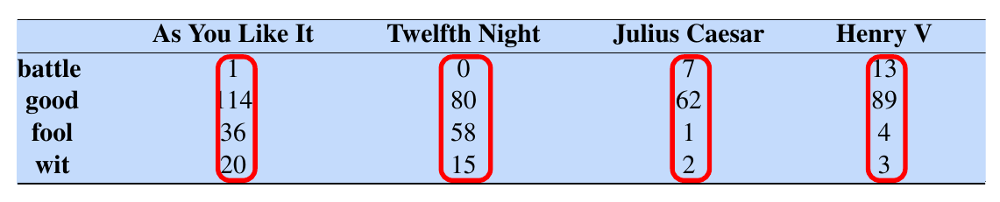
If we intend to represent each document as a numeric vector, the columns, highlighted by the red boxes, would be a natural choice. Suppose we only focus on the coordinates corresponding to the words battle and fool. Then a visualisation of the documents would look like Figure 4.2.
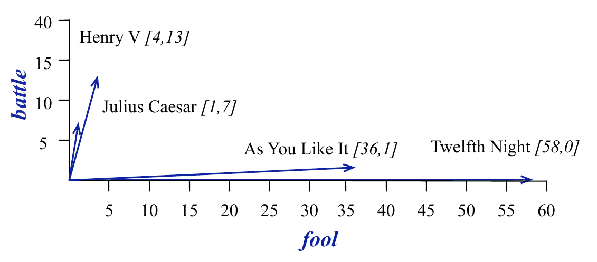
Visually, it is easy to tell that “Henry V” and “Julius Caesar” are similar (they point in the same direction) as opposed to “As You Like It” and “Twelfth Night”. But it is also easy to see why - the former two contain similar high counts of battle compared to the latter two, which are comedies.
Tf-idf are a normalised version of the above raw counts; they provide a numerical representation of documents, adjusting for document length and words that are common across all documents in a corpus.
Cosine similarity
In order to quantify the similarity (or nearness) of vector representations in NLP, the common method used is cosine similarity. Suppose that we have a vector representation of two documents \(\mathbf{v}\) and \(\mathbf{w}\). If the vocabulary size is \(N\), then each of the vectors is of length \(N\). Since we are dealing with counts the coordinate values of each vector will be non-negative. We use the angle \(\theta\) between the vectors as a measure of their similarity:
\[ \cos \theta = \frac{\sum_{i=1}^N v_i w_i}{\sqrt{\sum_{i=1}^N v_i^2} \sqrt{\sum_{i=1}^N w_i^2}} \]
Geometrically, cosine similarity measures the size of the angle between vectors (see Figure 4.3).
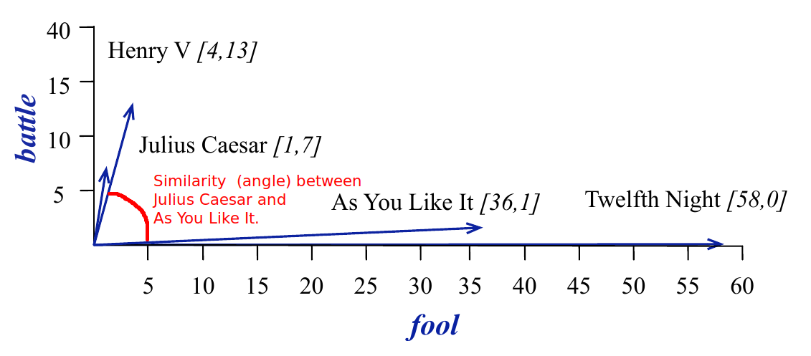
Dense Embeddings
One of the drawbacks of sparse vectors is that they are very long (the length of the vocabulary), and most entries in the vector will be 0. As a result, researchers worked on methods that would pack the information in the vectors into shorter ones. Instead of working on representations of the documents, the methods aimed to create representations of each token (or word) in the vocabulary. These are referred to as embeddings.
Here, we shall discuss word2vec (Mikolov, Sutskever, et al. (2013)), but take note that there are others. GLoVe (Pennington, Socher, and Manning (2014)) was invented soon after, but the most common embeddings used today arise from Deep Learning models. The most widely used version is BERT (see the video references below, as well as Devlin et al. (2019)).
The approach in word2vec deviates considerably from tf-idf, in that the goal is to obtain a numeric representation of a word, in the context of it’s surrounding words. Consider this statement:
13% of the United States population eats pizza on any given day. Mozzarella is commonly used on pizza, with the highest quality mozzarella from Naples. In Italy, pizza served in formal settings is eaten with a fork and knife.
The words eats, served and mozzarella appear close to pizza. Hence another word that appears in similar contexts, should be similar to pizza. Examples could be certain baked dishes or even salad.
To achieve such a representation, word2vec runs a self-supervised algorithm, with two tasks:
- Primary task: To “learn” a numeric vector that represents each word.
- Pretext task (stepping stone): To train a classifier that, when given a word \(w\), predicts nearby context words \(c\).
Self-supervised algorithms differ from supervised algorithms in that there are no labels that need to be created. The pre-text task trains a model to perform predictions, based on a sliding window context (see Figure 4.4).
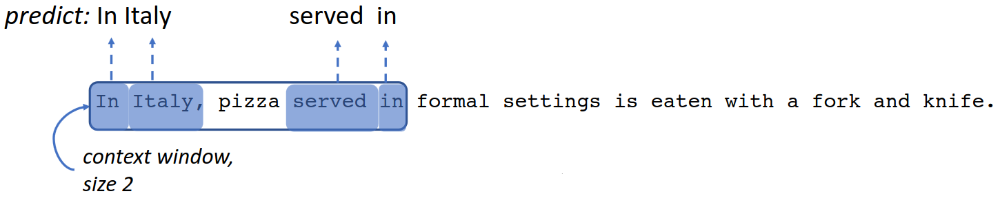
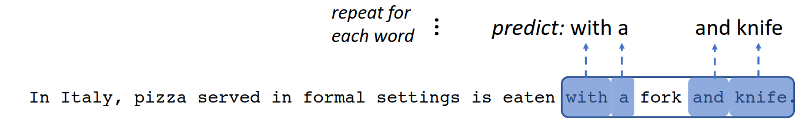
Starting with an initial random vector for each word, the algorithm updates the vectors as it proceeds through the corpus, finally ending up with an embedding for each word that reflects its semantic value, based on neighbouring words.
In NLP, the quality of an embedding can be evaluated using an analogy task:
Given X, Y and Z, find W such that W is related to to Z in the same way that X is related to Y.
For instance, if we are given the pair man:king, and the word woman, then the embedding should return queen, since woman:queen in the same way that man is related to king. Geometrically, the answer to the analogy is obtained by adding (king - man) to woman. The nearest embedding to the result, is returned as the answer.
On the left are examples of the types of analogy pairs that word2vec is able to solve, while on the right, we have visualisations of GLoVe.

Example 4.5 (Glove dense embeddings) Here’s how we can use gensim code to conduct the analogy task. First, we load 400,000 GLoVe vectors, each representing a different word. Each vector is of length 300. We load the vectors from Hugging Face, just like we will later in Section 4.8.
The word_vectors object can be used to return GloVe embeddings for tokens. For instance, word_vectors.embeddings('woman') will return the numpy array corresponding to “woman”.
The following code will create a NearestNeighbors object, that allows us to retrieve the nearest vector(s) to a given one.
The following code will run the analogy task. It returns the answer to:
Man is to king as woman is to ______ .
4.6 Visualisation with t-SNE
When compared with sparse embeddings, dense embeddings are compact. However, a more important difference is that dense vectors contain the semantic meaning of words. This means that vectors that are close to each other are similar in meaning. Let us use t-SNE to visualise the GloVe embeddings.
There are a total of 400,000 vectors in the embedding. Even with t-SNE that will be difficult to make sense of. Hence for now, we simply visualise the first 1000 most common words.
The following code extracts the first 1000 word vectors and applies the t-SNE transformation to them. Please refer to Section 3.5.2 for more details.
nn = 1000
glove_1e3 = word_vectors.vectors[:nn, :]
labels = pd.Series(list(word_vectors.tokens.keys())[:nn])
tsne1 = manifold.TSNE(n_components=2, init="random", perplexity=10,
metric='cosine', verbose=0, max_iter=5000,
random_state=222)
glove_transformed = tsne1.fit_transform(glove_1e3)
df2 = pd.DataFrame(glove_transformed, columns=['x','y'])
df2['labels'] = labelsYou should get the same plot (?fig-tsne-glove) as us since we have set the same seed at the start of the cell, and when we initialise the transformer. Explore the resulting plot - notice how months of the year appear close together at the bottom left. Around the left as well, the calendar years appear as a group.
fig = px.scatter(df2, x='x', y='y', text='labels', width=1024, height=960)
fig.update_traces(textposition='top center')
fig.show()
Note
Would we be able to make such a plot using tf-idf? Why or why not?
4.7 Neural Language Models
Language is complex. It is incredible how we can understand such long paragraphs of texts with such ease. We somehow seem to have learnt complicated sets of grammar and syntax just by listening to others speak. To get a machine to learn language has not been easy. It is only recently that Large Language Models such as chatGPT have demonstrated that it is possible for machines to converse with humans just as we do to one another.
Neural Models (or deep learning models) have been the key to this. In this subsection, we provide a very brief overview of their characteristics that allow them to achieve impressive performance on a range of language-related tasks.
The basic unit of a neural model is the neural unit (Figure 4.5). It consists of weights and a non-linear activation function. Given an input vector, the weights are multiplied by the input vector, summed and then fed through the activation function to generate an output.
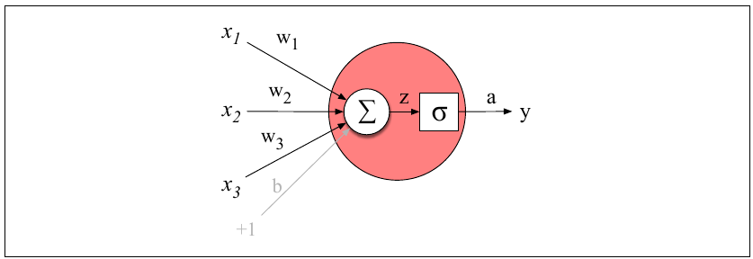
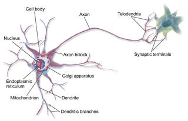
Neural models are made up of many neural units, organised into layers. The first neural models were Feed-Forward Networks. Due to the virtue of being able to incorporate many parameters, and due to semi-supervised learning, they were already a huge improvement over earlier models. Figure 4.6 shows a simple set up, with one hidden layer for training a language model (used to predict the next word, from the preceding three). It can also be used to learn embeddings.
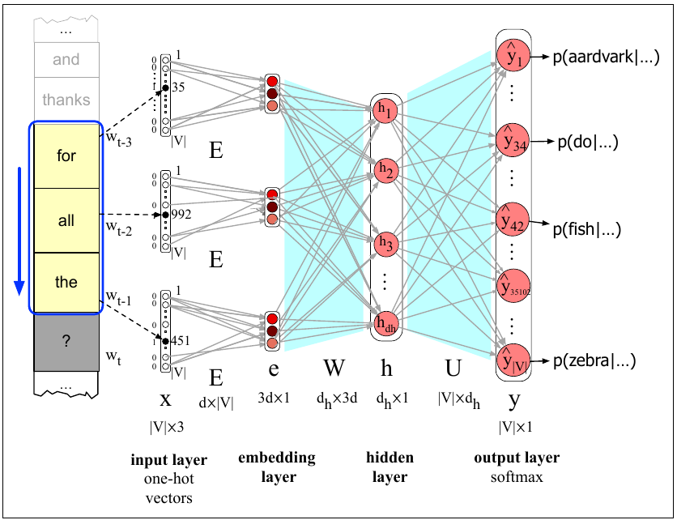
The next evolution in neural models was the ability to incorporate words in the recent history. For humans, this comes naturally. For instance, we know that this is grammatically correct:
The flights the airline was cancelling were full.
For neural models to have this ability, it was necessary to incorporate the hidden layers from recent words when processing the current word. Recurrent Neural Networks (RNNs) and Long-Short Term Memory (LSTM) networks had these features, but they were very slow to train. The major breakthrough came with the invention of the transformer architecture. The self-attention layer of these networks gave a word access to all preceding words in the training window, instead of just one (see Figure 4.7). Most importantly. the training of these networks could be parallelised!
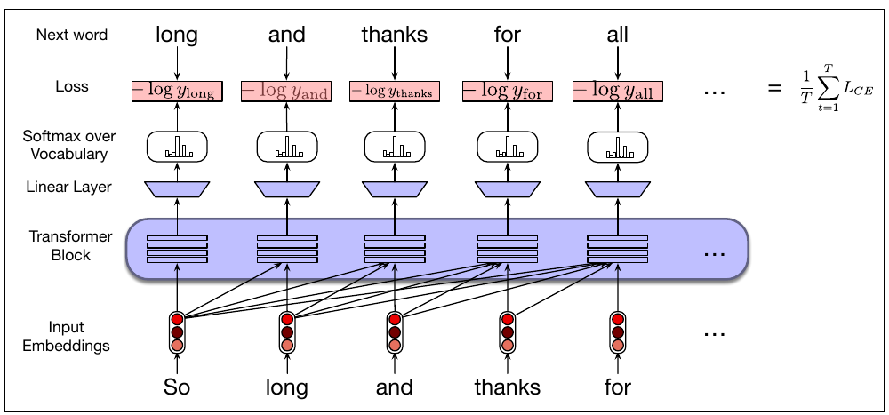
Here are some more examples where transformers excel:
The keys to the cabinet are on the table.
The chicken crossed the road because it wanted to get to the other side.
I walked along the pond, and noticed that one of the trees along the bank had fallen into the water after the storm.
In the final sentence, the word bank has two meanings - how will a model know to decide the correct one? With transformers, because the full context of a word is captured along with it, it is possible to perform this disambiguation. In Figure 4.8, we can see that almost every word has multiple meanings. But with context, the correct meaning can be identified.
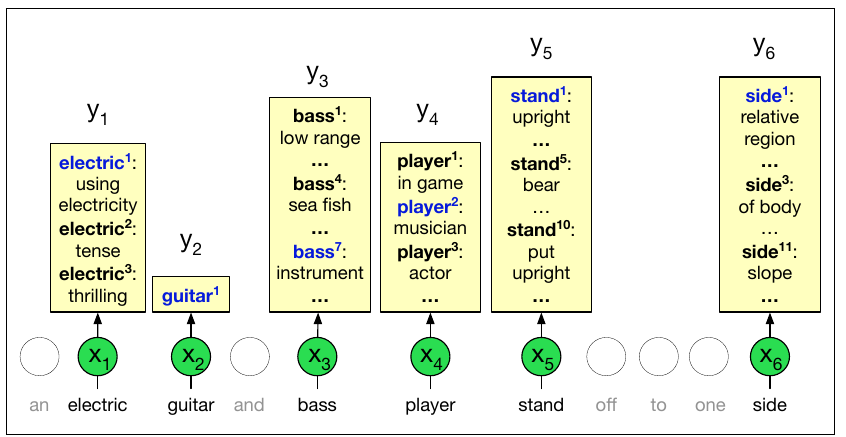
4.8 Applications
Hugging Face has spent a considerable effort to make Neural Language Models accessible and available to all with minimal coding. For starters, they have ensured that all their models are described in a standardised manner with model cards. Here is an example of a model card for BERT.
Moreover, they have developed easy to use pipelines. For NLP, the following tasks have mature pipelines:
- Feature-extraction (obtaining the embedding of a text)
- Named Entity Recognition
- Question-answering
- Sentiment-analysis
- Summarization
- Text-generation
- Translation, and
- Zero-shot-classification.
Sentiment Analysis
In this subsection, we shall utilise one of their sentiment analysis models on the wine reviews dataset. This is a transformer-based neural language model (BERT) that has been fine-tuned with data labelled with sentiments. All we have to do is feed in the sentence, and we will obtain a confidence score, and a sentiment label.
classifier = pipeline("sentiment-analysis",
model="distilbert/distilbert-base-uncased-finetuned-sst-2-english")
classifier(["I love this course!", "I absolutely detest this course."])[{'label': 'POSITIVE', 'score': 0.9998835325241089},
{'label': 'NEGATIVE', 'score': 0.9973570704460144}]Example 4.6 (Wine reviews sentiments)
The number of reviews we have is close to 120,000. Hence, computing the sentiments for each and every one will take a long time. Instead, we shall compute the sentiments for a sample (of size 20, where possible) from each variety of wine.
The following snippet samples 20 reviews from each wine type.
The next snippet computes the sentiment scores for those sampled reviews, and uses a widget to keep track of progress of the iterations.
tmp_df['score'] = 0.00
tmp_df['label'] = ''
for i, rr in tqdm(enumerate(review_list), total=len(review_list), desc="Classifying reviews"):
tmp = classifier(rr)[0]
tmp_df.loc[i, 'score'] = tmp['score']
tmp_df.loc[i, 'label'] = tmp['label']Classifying reviews: 0%| | 0/6490 [00:00<?, ?it/s]Classifying reviews: 0%| | 5/6490 [00:00<02:37, 41.26it/s]Classifying reviews: 0%| | 12/6490 [00:00<02:03, 52.38it/s]Classifying reviews: 0%| | 18/6490 [00:00<02:04, 51.98it/s]Classifying reviews: 0%| | 24/6490 [00:00<01:58, 54.79it/s]Classifying reviews: 0%| | 30/6490 [00:00<01:56, 55.63it/s]Classifying reviews: 1%| | 36/6490 [00:00<01:57, 54.74it/s]Classifying reviews: 1%| | 42/6490 [00:00<02:01, 52.91it/s]Classifying reviews: 1%| | 48/6490 [00:00<02:10, 49.39it/s]Classifying reviews: 1%| | 55/6490 [00:01<02:02, 52.63it/s]Classifying reviews: 1%| | 61/6490 [00:01<02:04, 51.59it/s]Classifying reviews: 1%| | 68/6490 [00:01<01:57, 54.47it/s]Classifying reviews: 1%| | 75/6490 [00:01<01:53, 56.38it/s]Classifying reviews: 1%| | 81/6490 [00:01<01:53, 56.32it/s]Classifying reviews: 1%|▏ | 87/6490 [00:01<01:53, 56.24it/s]Classifying reviews: 1%|▏ | 93/6490 [00:01<01:56, 54.91it/s]Classifying reviews: 2%|▏ | 99/6490 [00:01<02:19, 45.66it/s]Classifying reviews: 2%|▏ | 104/6490 [00:02<02:18, 46.24it/s]Classifying reviews: 2%|▏ | 110/6490 [00:02<02:09, 49.27it/s]Classifying reviews: 2%|▏ | 117/6490 [00:02<01:59, 53.45it/s]Classifying reviews: 2%|▏ | 123/6490 [00:02<01:55, 54.94it/s]Classifying reviews: 2%|▏ | 129/6490 [00:02<02:08, 49.51it/s]Classifying reviews: 2%|▏ | 135/6490 [00:02<02:03, 51.50it/s]Classifying reviews: 2%|▏ | 141/6490 [00:02<02:00, 52.79it/s]Classifying reviews: 2%|▏ | 147/6490 [00:02<01:57, 54.09it/s]Classifying reviews: 2%|▏ | 153/6490 [00:02<01:54, 55.50it/s]Classifying reviews: 2%|▏ | 159/6490 [00:03<01:56, 54.22it/s]Classifying reviews: 3%|▎ | 165/6490 [00:03<01:55, 54.69it/s]Classifying reviews: 3%|▎ | 171/6490 [00:03<01:57, 53.71it/s]Classifying reviews: 3%|▎ | 177/6490 [00:03<01:55, 54.60it/s]Classifying reviews: 3%|▎ | 184/6490 [00:03<01:51, 56.46it/s]Classifying reviews: 3%|▎ | 191/6490 [00:03<01:47, 58.52it/s]Classifying reviews: 3%|▎ | 198/6490 [00:03<01:45, 59.42it/s]Classifying reviews: 3%|▎ | 204/6490 [00:03<01:45, 59.38it/s]Classifying reviews: 3%|▎ | 211/6490 [00:03<01:44, 60.00it/s]Classifying reviews: 3%|▎ | 218/6490 [00:04<01:41, 61.59it/s]Classifying reviews: 3%|▎ | 225/6490 [00:04<01:43, 60.43it/s]Classifying reviews: 4%|▎ | 232/6490 [00:04<01:42, 61.31it/s]Classifying reviews: 4%|▎ | 239/6490 [00:04<01:43, 60.65it/s]Classifying reviews: 4%|▍ | 246/6490 [00:04<01:48, 57.51it/s]Classifying reviews: 4%|▍ | 253/6490 [00:04<01:42, 60.64it/s]Classifying reviews: 4%|▍ | 260/6490 [00:04<01:43, 60.44it/s]Classifying reviews: 4%|▍ | 267/6490 [00:04<01:41, 61.18it/s]Classifying reviews: 4%|▍ | 274/6490 [00:04<01:44, 59.50it/s]Classifying reviews: 4%|▍ | 281/6490 [00:05<01:41, 61.41it/s]Classifying reviews: 4%|▍ | 288/6490 [00:05<01:38, 63.18it/s]Classifying reviews: 5%|▍ | 295/6490 [00:05<01:36, 64.26it/s]Classifying reviews: 5%|▍ | 302/6490 [00:05<01:36, 63.94it/s]Classifying reviews: 5%|▍ | 309/6490 [00:05<01:38, 62.90it/s]Classifying reviews: 5%|▍ | 316/6490 [00:05<01:40, 61.48it/s]Classifying reviews: 5%|▍ | 323/6490 [00:05<01:38, 62.66it/s]Classifying reviews: 5%|▌ | 330/6490 [00:05<01:39, 61.90it/s]Classifying reviews: 5%|▌ | 337/6490 [00:05<01:41, 60.81it/s]Classifying reviews: 5%|▌ | 344/6490 [00:06<01:42, 60.05it/s]Classifying reviews: 5%|▌ | 351/6490 [00:06<01:43, 59.04it/s]Classifying reviews: 6%|▌ | 357/6490 [00:06<01:44, 58.74it/s]Classifying reviews: 6%|▌ | 363/6490 [00:06<01:44, 58.36it/s]Classifying reviews: 6%|▌ | 369/6490 [00:06<01:49, 55.70it/s]Classifying reviews: 6%|▌ | 375/6490 [00:06<01:47, 56.63it/s]Classifying reviews: 6%|▌ | 381/6490 [00:06<01:49, 55.84it/s]Classifying reviews: 6%|▌ | 387/6490 [00:06<01:47, 56.91it/s]Classifying reviews: 6%|▌ | 394/6490 [00:06<01:44, 58.47it/s]Classifying reviews: 6%|▌ | 401/6490 [00:07<01:39, 61.17it/s]Classifying reviews: 6%|▋ | 408/6490 [00:07<01:40, 60.73it/s]Classifying reviews: 6%|▋ | 415/6490 [00:07<01:46, 57.23it/s]Classifying reviews: 6%|▋ | 421/6490 [00:07<01:52, 53.72it/s]Classifying reviews: 7%|▋ | 427/6490 [00:07<01:50, 54.81it/s]Classifying reviews: 7%|▋ | 434/6490 [00:07<01:47, 56.33it/s]Classifying reviews: 7%|▋ | 441/6490 [00:07<01:42, 59.05it/s]Classifying reviews: 7%|▋ | 448/6490 [00:07<01:41, 59.60it/s]Classifying reviews: 7%|▋ | 455/6490 [00:07<01:37, 62.06it/s]Classifying reviews: 7%|▋ | 462/6490 [00:08<01:38, 61.45it/s]Classifying reviews: 7%|▋ | 469/6490 [00:08<01:35, 62.97it/s]Classifying reviews: 7%|▋ | 476/6490 [00:08<01:33, 64.58it/s]Classifying reviews: 7%|▋ | 483/6490 [00:08<01:36, 62.14it/s]Classifying reviews: 8%|▊ | 490/6490 [00:08<01:35, 63.02it/s]Classifying reviews: 8%|▊ | 498/6490 [00:08<01:33, 64.24it/s]Classifying reviews: 8%|▊ | 505/6490 [00:08<01:40, 59.65it/s]Classifying reviews: 8%|▊ | 512/6490 [00:08<01:44, 57.30it/s]Classifying reviews: 8%|▊ | 518/6490 [00:09<01:45, 56.54it/s]Classifying reviews: 8%|▊ | 525/6490 [00:09<01:41, 58.71it/s]Classifying reviews: 8%|▊ | 531/6490 [00:09<01:41, 58.51it/s]Classifying reviews: 8%|▊ | 538/6490 [00:09<01:40, 59.36it/s]Classifying reviews: 8%|▊ | 544/6490 [00:09<01:43, 57.65it/s]Classifying reviews: 8%|▊ | 551/6490 [00:09<01:41, 58.51it/s]Classifying reviews: 9%|▊ | 557/6490 [00:09<01:42, 57.92it/s]Classifying reviews: 9%|▊ | 563/6490 [00:09<01:43, 57.41it/s]Classifying reviews: 9%|▉ | 570/6490 [00:09<01:42, 58.00it/s]Classifying reviews: 9%|▉ | 577/6490 [00:10<01:41, 58.47it/s]Classifying reviews: 9%|▉ | 584/6490 [00:10<01:38, 60.09it/s]Classifying reviews: 9%|▉ | 591/6490 [00:10<01:39, 59.58it/s]Classifying reviews: 9%|▉ | 599/6490 [00:10<01:33, 62.74it/s]Classifying reviews: 9%|▉ | 607/6490 [00:10<01:30, 65.01it/s]Classifying reviews: 9%|▉ | 614/6490 [00:10<01:35, 61.67it/s]Classifying reviews: 10%|▉ | 621/6490 [00:10<01:40, 58.48it/s]Classifying reviews: 10%|▉ | 628/6490 [00:10<01:38, 59.43it/s]Classifying reviews: 10%|▉ | 634/6490 [00:10<01:42, 57.16it/s]Classifying reviews: 10%|▉ | 641/6490 [00:11<01:39, 58.52it/s]Classifying reviews: 10%|▉ | 648/6490 [00:11<01:38, 59.38it/s]Classifying reviews: 10%|█ | 654/6490 [00:11<01:46, 54.85it/s]Classifying reviews: 10%|█ | 660/6490 [00:11<01:52, 51.93it/s]Classifying reviews: 10%|█ | 666/6490 [00:11<01:56, 50.09it/s]Classifying reviews: 10%|█ | 672/6490 [00:11<01:50, 52.56it/s]Classifying reviews: 10%|█ | 678/6490 [00:11<01:49, 53.01it/s]Classifying reviews: 11%|█ | 684/6490 [00:11<01:45, 54.89it/s]Classifying reviews: 11%|█ | 691/6490 [00:12<01:43, 56.19it/s]Classifying reviews: 11%|█ | 697/6490 [00:12<01:43, 56.10it/s]Classifying reviews: 11%|█ | 703/6490 [00:12<01:43, 55.83it/s]Classifying reviews: 11%|█ | 709/6490 [00:12<01:42, 56.14it/s]Classifying reviews: 11%|█ | 715/6490 [00:12<01:47, 53.73it/s]Classifying reviews: 11%|█ | 721/6490 [00:12<01:50, 52.29it/s]Classifying reviews: 11%|█ | 727/6490 [00:12<01:52, 51.42it/s]Classifying reviews: 11%|█▏ | 734/6490 [00:12<01:44, 55.14it/s]Classifying reviews: 11%|█▏ | 741/6490 [00:12<01:40, 57.45it/s]Classifying reviews: 12%|█▏ | 747/6490 [00:13<01:38, 58.13it/s]Classifying reviews: 12%|█▏ | 753/6490 [00:13<01:38, 58.35it/s]Classifying reviews: 12%|█▏ | 761/6490 [00:13<01:33, 61.47it/s]Classifying reviews: 12%|█▏ | 768/6490 [00:13<01:30, 62.89it/s]Classifying reviews: 12%|█▏ | 775/6490 [00:13<01:32, 62.01it/s]Classifying reviews: 12%|█▏ | 782/6490 [00:13<01:33, 60.88it/s]Classifying reviews: 12%|█▏ | 789/6490 [00:13<01:36, 58.86it/s]Classifying reviews: 12%|█▏ | 795/6490 [00:13<01:41, 56.05it/s]Classifying reviews: 12%|█▏ | 801/6490 [00:13<01:47, 53.09it/s]Classifying reviews: 12%|█▏ | 807/6490 [00:14<01:50, 51.53it/s]Classifying reviews: 13%|█▎ | 813/6490 [00:14<01:55, 49.10it/s]Classifying reviews: 13%|█▎ | 818/6490 [00:14<01:57, 48.45it/s]Classifying reviews: 13%|█▎ | 823/6490 [00:14<01:57, 48.32it/s]Classifying reviews: 13%|█▎ | 829/6490 [00:14<01:54, 49.61it/s]Classifying reviews: 13%|█▎ | 834/6490 [00:14<01:53, 49.62it/s]Classifying reviews: 13%|█▎ | 839/6490 [00:14<02:05, 44.87it/s]Classifying reviews: 13%|█▎ | 844/6490 [00:14<02:03, 45.56it/s]Classifying reviews: 13%|█▎ | 850/6490 [00:15<01:59, 47.39it/s]Classifying reviews: 13%|█▎ | 855/6490 [00:15<02:04, 45.21it/s]Classifying reviews: 13%|█▎ | 861/6490 [00:15<02:00, 46.68it/s]Classifying reviews: 13%|█▎ | 866/6490 [00:15<02:02, 45.89it/s]Classifying reviews: 13%|█▎ | 871/6490 [00:15<02:01, 46.18it/s]Classifying reviews: 13%|█▎ | 876/6490 [00:15<02:01, 46.28it/s]Classifying reviews: 14%|█▎ | 881/6490 [00:15<02:01, 46.29it/s]Classifying reviews: 14%|█▎ | 887/6490 [00:15<01:57, 47.64it/s]Classifying reviews: 14%|█▍ | 893/6490 [00:15<01:54, 48.78it/s]Classifying reviews: 14%|█▍ | 898/6490 [00:16<01:55, 48.59it/s]Classifying reviews: 14%|█▍ | 903/6490 [00:16<01:56, 47.95it/s]Classifying reviews: 14%|█▍ | 908/6490 [00:16<02:00, 46.48it/s]Classifying reviews: 14%|█▍ | 913/6490 [00:16<02:07, 43.76it/s]Classifying reviews: 14%|█▍ | 918/6490 [00:16<02:04, 44.84it/s]Classifying reviews: 14%|█▍ | 923/6490 [00:16<02:01, 45.89it/s]Classifying reviews: 14%|█▍ | 929/6490 [00:16<01:55, 48.05it/s]Classifying reviews: 14%|█▍ | 934/6490 [00:16<01:54, 48.40it/s]Classifying reviews: 14%|█▍ | 940/6490 [00:16<01:52, 49.32it/s]Classifying reviews: 15%|█▍ | 947/6490 [00:17<01:43, 53.36it/s]Classifying reviews: 15%|█▍ | 953/6490 [00:17<01:42, 53.91it/s]Classifying reviews: 15%|█▍ | 959/6490 [00:17<01:44, 52.72it/s]Classifying reviews: 15%|█▍ | 965/6490 [00:17<01:47, 51.58it/s]Classifying reviews: 15%|█▍ | 971/6490 [00:17<01:49, 50.53it/s]Classifying reviews: 15%|█▌ | 977/6490 [00:17<01:49, 50.25it/s]Classifying reviews: 15%|█▌ | 983/6490 [00:17<01:49, 50.39it/s]Classifying reviews: 15%|█▌ | 989/6490 [00:17<01:48, 50.76it/s]Classifying reviews: 15%|█▌ | 995/6490 [00:18<01:48, 50.76it/s]Classifying reviews: 15%|█▌ | 1001/6490 [00:18<01:47, 51.29it/s]Classifying reviews: 16%|█▌ | 1007/6490 [00:18<01:43, 53.01it/s]Classifying reviews: 16%|█▌ | 1013/6490 [00:18<01:44, 52.36it/s]Classifying reviews: 16%|█▌ | 1019/6490 [00:18<01:45, 51.64it/s]Classifying reviews: 16%|█▌ | 1025/6490 [00:18<01:47, 50.93it/s]Classifying reviews: 16%|█▌ | 1031/6490 [00:18<01:47, 50.98it/s]Classifying reviews: 16%|█▌ | 1037/6490 [00:18<01:53, 47.89it/s]Classifying reviews: 16%|█▌ | 1042/6490 [00:18<01:55, 47.00it/s]Classifying reviews: 16%|█▌ | 1047/6490 [00:19<01:55, 47.10it/s]Classifying reviews: 16%|█▌ | 1052/6490 [00:19<01:53, 47.83it/s]Classifying reviews: 16%|█▋ | 1058/6490 [00:19<01:52, 48.09it/s]Classifying reviews: 16%|█▋ | 1064/6490 [00:19<01:46, 50.74it/s]Classifying reviews: 16%|█▋ | 1070/6490 [00:19<01:46, 50.75it/s]Classifying reviews: 17%|█▋ | 1076/6490 [00:19<01:42, 53.07it/s]Classifying reviews: 17%|█▋ | 1082/6490 [00:19<01:40, 53.80it/s]Classifying reviews: 17%|█▋ | 1088/6490 [00:19<01:37, 55.44it/s]Classifying reviews: 17%|█▋ | 1094/6490 [00:19<01:38, 54.62it/s]Classifying reviews: 17%|█▋ | 1100/6490 [00:20<01:37, 55.01it/s]Classifying reviews: 17%|█▋ | 1107/6490 [00:20<01:33, 57.27it/s]Classifying reviews: 17%|█▋ | 1113/6490 [00:20<01:38, 54.73it/s]Classifying reviews: 17%|█▋ | 1119/6490 [00:20<01:35, 56.17it/s]Classifying reviews: 17%|█▋ | 1125/6490 [00:20<01:37, 55.20it/s]Classifying reviews: 17%|█▋ | 1131/6490 [00:20<01:37, 55.01it/s]Classifying reviews: 18%|█▊ | 1138/6490 [00:20<01:34, 56.34it/s]Classifying reviews: 18%|█▊ | 1144/6490 [00:20<01:37, 54.59it/s]Classifying reviews: 18%|█▊ | 1150/6490 [00:20<01:39, 53.53it/s]Classifying reviews: 18%|█▊ | 1156/6490 [00:21<01:42, 52.16it/s]Classifying reviews: 18%|█▊ | 1162/6490 [00:21<01:42, 51.85it/s]Classifying reviews: 18%|█▊ | 1168/6490 [00:21<01:44, 51.09it/s]Classifying reviews: 18%|█▊ | 1174/6490 [00:21<01:57, 45.15it/s]Classifying reviews: 18%|█▊ | 1179/6490 [00:21<01:56, 45.70it/s]Classifying reviews: 18%|█▊ | 1184/6490 [00:21<01:55, 46.08it/s]Classifying reviews: 18%|█▊ | 1190/6490 [00:21<01:50, 47.75it/s]Classifying reviews: 18%|█▊ | 1196/6490 [00:21<01:48, 48.72it/s]Classifying reviews: 19%|█▊ | 1202/6490 [00:22<01:43, 51.00it/s]Classifying reviews: 19%|█▊ | 1208/6490 [00:22<01:52, 46.78it/s]Classifying reviews: 19%|█▊ | 1213/6490 [00:22<01:59, 44.34it/s]Classifying reviews: 19%|█▉ | 1218/6490 [00:22<01:56, 45.14it/s]Classifying reviews: 19%|█▉ | 1224/6490 [00:22<01:48, 48.36it/s]Classifying reviews: 19%|█▉ | 1230/6490 [00:22<01:45, 49.72it/s]Classifying reviews: 19%|█▉ | 1236/6490 [00:22<01:50, 47.72it/s]Classifying reviews: 19%|█▉ | 1242/6490 [00:22<01:43, 50.84it/s]Classifying reviews: 19%|█▉ | 1248/6490 [00:22<01:45, 49.51it/s]Classifying reviews: 19%|█▉ | 1254/6490 [00:23<01:40, 52.13it/s]Classifying reviews: 19%|█▉ | 1260/6490 [00:23<01:41, 51.59it/s]Classifying reviews: 20%|█▉ | 1266/6490 [00:23<01:40, 51.81it/s]Classifying reviews: 20%|█▉ | 1272/6490 [00:23<01:37, 53.56it/s]Classifying reviews: 20%|█▉ | 1278/6490 [00:23<01:36, 53.78it/s]Classifying reviews: 20%|█▉ | 1284/6490 [00:23<01:38, 53.12it/s]Classifying reviews: 20%|█▉ | 1291/6490 [00:23<01:32, 56.48it/s]Classifying reviews: 20%|█▉ | 1297/6490 [00:23<01:32, 56.41it/s]Classifying reviews: 20%|██ | 1303/6490 [00:23<01:32, 56.24it/s]Classifying reviews: 20%|██ | 1309/6490 [00:24<01:33, 55.55it/s]Classifying reviews: 20%|██ | 1315/6490 [00:24<01:34, 54.71it/s]Classifying reviews: 20%|██ | 1321/6490 [00:24<01:37, 52.80it/s]Classifying reviews: 20%|██ | 1327/6490 [00:24<01:41, 50.96it/s]Classifying reviews: 21%|██ | 1333/6490 [00:24<01:42, 50.31it/s]Classifying reviews: 21%|██ | 1339/6490 [00:24<01:45, 48.91it/s]Classifying reviews: 21%|██ | 1344/6490 [00:24<01:46, 48.11it/s]Classifying reviews: 21%|██ | 1349/6490 [00:24<01:48, 47.32it/s]Classifying reviews: 21%|██ | 1354/6490 [00:25<01:53, 45.09it/s]Classifying reviews: 21%|██ | 1359/6490 [00:25<01:50, 46.37it/s]Classifying reviews: 21%|██ | 1364/6490 [00:25<01:50, 46.53it/s]Classifying reviews: 21%|██ | 1370/6490 [00:25<01:48, 47.30it/s]Classifying reviews: 21%|██ | 1376/6490 [00:25<01:43, 49.53it/s]Classifying reviews: 21%|██▏ | 1382/6490 [00:25<01:37, 52.25it/s]Classifying reviews: 21%|██▏ | 1388/6490 [00:25<01:33, 54.29it/s]Classifying reviews: 21%|██▏ | 1394/6490 [00:25<01:34, 54.13it/s]Classifying reviews: 22%|██▏ | 1401/6490 [00:25<01:28, 57.56it/s]Classifying reviews: 22%|██▏ | 1407/6490 [00:26<01:29, 57.03it/s]Classifying reviews: 22%|██▏ | 1413/6490 [00:26<01:29, 56.61it/s]Classifying reviews: 22%|██▏ | 1420/6490 [00:26<01:26, 58.55it/s]Classifying reviews: 22%|██▏ | 1427/6490 [00:26<01:25, 59.48it/s]Classifying reviews: 22%|██▏ | 1434/6490 [00:26<01:22, 61.49it/s]Classifying reviews: 22%|██▏ | 1441/6490 [00:26<01:21, 61.79it/s]Classifying reviews: 22%|██▏ | 1448/6490 [00:26<01:21, 62.12it/s]Classifying reviews: 22%|██▏ | 1455/6490 [00:26<01:20, 62.78it/s]Classifying reviews: 23%|██▎ | 1462/6490 [00:26<01:25, 58.84it/s]Classifying reviews: 23%|██▎ | 1468/6490 [00:27<01:28, 56.56it/s]Classifying reviews: 23%|██▎ | 1474/6490 [00:27<01:28, 56.72it/s]Classifying reviews: 23%|██▎ | 1480/6490 [00:27<01:27, 57.44it/s]Classifying reviews: 23%|██▎ | 1486/6490 [00:27<01:27, 57.47it/s]Classifying reviews: 23%|██▎ | 1492/6490 [00:27<01:28, 56.39it/s]Classifying reviews: 23%|██▎ | 1498/6490 [00:27<01:31, 54.47it/s]Classifying reviews: 23%|██▎ | 1504/6490 [00:27<01:35, 52.14it/s]Classifying reviews: 23%|██▎ | 1510/6490 [00:27<01:36, 51.35it/s]Classifying reviews: 23%|██▎ | 1516/6490 [00:28<01:51, 44.67it/s]Classifying reviews: 23%|██▎ | 1521/6490 [00:28<01:49, 45.55it/s]Classifying reviews: 24%|██▎ | 1527/6490 [00:28<01:44, 47.61it/s]Classifying reviews: 24%|██▎ | 1534/6490 [00:28<01:35, 52.08it/s]Classifying reviews: 24%|██▎ | 1540/6490 [00:28<01:40, 49.44it/s]Classifying reviews: 24%|██▍ | 1546/6490 [00:28<01:38, 50.38it/s]Classifying reviews: 24%|██▍ | 1552/6490 [00:28<01:36, 51.07it/s]Classifying reviews: 24%|██▍ | 1558/6490 [00:28<01:52, 43.73it/s]Classifying reviews: 24%|██▍ | 1563/6490 [00:28<01:52, 43.84it/s]Classifying reviews: 24%|██▍ | 1568/6490 [00:29<01:49, 44.96it/s]Classifying reviews: 24%|██▍ | 1573/6490 [00:29<01:51, 44.21it/s]Classifying reviews: 24%|██▍ | 1578/6490 [00:29<01:50, 44.42it/s]Classifying reviews: 24%|██▍ | 1583/6490 [00:29<01:48, 45.20it/s]Classifying reviews: 24%|██▍ | 1589/6490 [00:29<01:43, 47.25it/s]Classifying reviews: 25%|██▍ | 1594/6490 [00:29<01:42, 47.93it/s]Classifying reviews: 25%|██▍ | 1599/6490 [00:29<01:42, 47.60it/s]Classifying reviews: 25%|██▍ | 1605/6490 [00:29<01:37, 50.33it/s]Classifying reviews: 25%|██▍ | 1611/6490 [00:29<01:31, 53.05it/s]Classifying reviews: 25%|██▍ | 1617/6490 [00:30<01:29, 54.67it/s]Classifying reviews: 25%|██▌ | 1623/6490 [00:30<01:29, 54.17it/s]Classifying reviews: 25%|██▌ | 1629/6490 [00:30<01:28, 54.90it/s]Classifying reviews: 25%|██▌ | 1635/6490 [00:30<01:26, 55.83it/s]Classifying reviews: 25%|██▌ | 1642/6490 [00:30<01:23, 58.18it/s]Classifying reviews: 25%|██▌ | 1648/6490 [00:30<01:23, 58.14it/s]Classifying reviews: 26%|██▌ | 1655/6490 [00:30<01:21, 59.18it/s]Classifying reviews: 26%|██▌ | 1661/6490 [00:30<01:23, 57.95it/s]Classifying reviews: 26%|██▌ | 1667/6490 [00:30<01:25, 56.29it/s]Classifying reviews: 26%|██▌ | 1674/6490 [00:31<01:23, 57.72it/s]Classifying reviews: 26%|██▌ | 1681/6490 [00:31<01:21, 59.31it/s]Classifying reviews: 26%|██▌ | 1687/6490 [00:31<01:23, 57.42it/s]Classifying reviews: 26%|██▌ | 1694/6490 [00:31<01:23, 57.36it/s]Classifying reviews: 26%|██▌ | 1700/6490 [00:31<01:24, 56.93it/s]Classifying reviews: 26%|██▋ | 1706/6490 [00:31<01:25, 56.20it/s]Classifying reviews: 26%|██▋ | 1712/6490 [00:31<01:27, 54.57it/s]Classifying reviews: 26%|██▋ | 1718/6490 [00:31<01:28, 54.07it/s]Classifying reviews: 27%|██▋ | 1725/6490 [00:31<01:23, 56.73it/s]Classifying reviews: 27%|██▋ | 1731/6490 [00:32<01:26, 55.29it/s]Classifying reviews: 27%|██▋ | 1737/6490 [00:32<01:29, 53.28it/s]Classifying reviews: 27%|██▋ | 1743/6490 [00:32<01:32, 51.06it/s]Classifying reviews: 27%|██▋ | 1749/6490 [00:32<01:32, 51.40it/s]Classifying reviews: 27%|██▋ | 1755/6490 [00:32<01:32, 51.09it/s]Classifying reviews: 27%|██▋ | 1761/6490 [00:32<01:31, 51.55it/s]Classifying reviews: 27%|██▋ | 1767/6490 [00:32<01:37, 48.41it/s]Classifying reviews: 27%|██▋ | 1773/6490 [00:32<01:34, 49.68it/s]Classifying reviews: 27%|██▋ | 1779/6490 [00:33<01:34, 50.06it/s]Classifying reviews: 28%|██▊ | 1785/6490 [00:33<01:33, 50.08it/s]Classifying reviews: 28%|██▊ | 1791/6490 [00:33<01:34, 49.96it/s]Classifying reviews: 28%|██▊ | 1797/6490 [00:33<01:39, 46.95it/s]Classifying reviews: 28%|██▊ | 1802/6490 [00:33<01:40, 46.70it/s]Classifying reviews: 28%|██▊ | 1808/6490 [00:33<01:36, 48.35it/s]Classifying reviews: 28%|██▊ | 1814/6490 [00:33<01:32, 50.57it/s]Classifying reviews: 28%|██▊ | 1821/6490 [00:33<01:27, 53.15it/s]Classifying reviews: 28%|██▊ | 1827/6490 [00:34<01:29, 52.34it/s]Classifying reviews: 28%|██▊ | 1833/6490 [00:34<01:36, 48.39it/s]Classifying reviews: 28%|██▊ | 1838/6490 [00:34<01:36, 48.05it/s]Classifying reviews: 28%|██▊ | 1844/6490 [00:34<01:32, 50.21it/s]Classifying reviews: 29%|██▊ | 1850/6490 [00:34<01:30, 51.03it/s]Classifying reviews: 29%|██▊ | 1856/6490 [00:34<01:27, 52.85it/s]Classifying reviews: 29%|██▊ | 1863/6490 [00:34<01:25, 54.34it/s]Classifying reviews: 29%|██▉ | 1869/6490 [00:34<01:25, 54.06it/s]Classifying reviews: 29%|██▉ | 1875/6490 [00:34<01:24, 54.47it/s]Classifying reviews: 29%|██▉ | 1881/6490 [00:35<01:28, 52.30it/s]Classifying reviews: 29%|██▉ | 1887/6490 [00:35<01:29, 51.60it/s]Classifying reviews: 29%|██▉ | 1893/6490 [00:35<01:30, 50.53it/s]Classifying reviews: 29%|██▉ | 1899/6490 [00:35<01:29, 51.50it/s]Classifying reviews: 29%|██▉ | 1905/6490 [00:35<01:30, 50.92it/s]Classifying reviews: 29%|██▉ | 1911/6490 [00:35<01:31, 49.86it/s]Classifying reviews: 30%|██▉ | 1916/6490 [00:35<01:31, 49.85it/s]Classifying reviews: 30%|██▉ | 1921/6490 [00:35<01:38, 46.26it/s]Classifying reviews: 30%|██▉ | 1926/6490 [00:35<01:37, 46.89it/s]Classifying reviews: 30%|██▉ | 1932/6490 [00:36<01:32, 49.26it/s]Classifying reviews: 30%|██▉ | 1937/6490 [00:36<01:32, 49.32it/s]Classifying reviews: 30%|██▉ | 1943/6490 [00:36<01:28, 51.50it/s]Classifying reviews: 30%|███ | 1949/6490 [00:36<01:27, 51.97it/s]Classifying reviews: 30%|███ | 1955/6490 [00:36<01:26, 52.16it/s]Classifying reviews: 30%|███ | 1961/6490 [00:36<01:27, 51.80it/s]Classifying reviews: 30%|███ | 1967/6490 [00:36<01:26, 52.47it/s]Classifying reviews: 30%|███ | 1973/6490 [00:36<01:25, 52.85it/s]Classifying reviews: 30%|███ | 1979/6490 [00:37<01:30, 49.92it/s]Classifying reviews: 31%|███ | 1985/6490 [00:37<01:27, 51.28it/s]Classifying reviews: 31%|███ | 1992/6490 [00:37<01:22, 54.33it/s]Classifying reviews: 31%|███ | 1999/6490 [00:37<01:18, 56.90it/s]Classifying reviews: 31%|███ | 2005/6490 [00:37<01:18, 56.77it/s]Classifying reviews: 31%|███ | 2011/6490 [00:37<01:22, 54.52it/s]Classifying reviews: 31%|███ | 2017/6490 [00:37<01:23, 53.46it/s]Classifying reviews: 31%|███ | 2023/6490 [00:37<01:23, 53.40it/s]Classifying reviews: 31%|███▏ | 2029/6490 [00:37<01:25, 52.47it/s]Classifying reviews: 31%|███▏ | 2035/6490 [00:38<01:27, 51.13it/s]Classifying reviews: 31%|███▏ | 2041/6490 [00:38<01:30, 48.98it/s]Classifying reviews: 32%|███▏ | 2046/6490 [00:38<01:33, 47.73it/s]Classifying reviews: 32%|███▏ | 2052/6490 [00:38<01:30, 48.96it/s]Classifying reviews: 32%|███▏ | 2058/6490 [00:38<01:27, 50.83it/s]Classifying reviews: 32%|███▏ | 2064/6490 [00:38<01:23, 52.72it/s]Classifying reviews: 32%|███▏ | 2070/6490 [00:38<01:24, 52.57it/s]Classifying reviews: 32%|███▏ | 2077/6490 [00:38<01:20, 55.09it/s]Classifying reviews: 32%|███▏ | 2083/6490 [00:38<01:22, 53.30it/s]Classifying reviews: 32%|███▏ | 2089/6490 [00:39<01:21, 53.82it/s]Classifying reviews: 32%|███▏ | 2095/6490 [00:39<01:23, 52.42it/s]Classifying reviews: 32%|███▏ | 2102/6490 [00:39<01:20, 54.77it/s]Classifying reviews: 32%|███▏ | 2109/6490 [00:39<01:15, 57.87it/s]Classifying reviews: 33%|███▎ | 2115/6490 [00:39<01:18, 55.99it/s]Classifying reviews: 33%|███▎ | 2121/6490 [00:39<01:20, 54.26it/s]Classifying reviews: 33%|███▎ | 2127/6490 [00:39<01:21, 53.53it/s]Classifying reviews: 33%|███▎ | 2133/6490 [00:39<01:23, 51.97it/s]Classifying reviews: 33%|███▎ | 2139/6490 [00:40<01:23, 52.03it/s]Classifying reviews: 33%|███▎ | 2145/6490 [00:40<01:22, 52.94it/s]Classifying reviews: 33%|███▎ | 2151/6490 [00:40<01:21, 53.35it/s]Classifying reviews: 33%|███▎ | 2157/6490 [00:40<01:24, 51.23it/s]Classifying reviews: 33%|███▎ | 2163/6490 [00:40<01:24, 51.15it/s]Classifying reviews: 33%|███▎ | 2169/6490 [00:40<01:27, 49.19it/s]Classifying reviews: 33%|███▎ | 2174/6490 [00:40<01:29, 48.32it/s]Classifying reviews: 34%|███▎ | 2179/6490 [00:40<01:29, 48.06it/s]Classifying reviews: 34%|███▎ | 2185/6490 [00:40<01:28, 48.53it/s]Classifying reviews: 34%|███▎ | 2190/6490 [00:41<01:28, 48.62it/s]Classifying reviews: 34%|███▍ | 2195/6490 [00:41<01:30, 47.40it/s]Classifying reviews: 34%|███▍ | 2200/6490 [00:41<01:36, 44.26it/s]Classifying reviews: 34%|███▍ | 2205/6490 [00:41<01:37, 43.92it/s]Classifying reviews: 34%|███▍ | 2210/6490 [00:41<01:37, 44.02it/s]Classifying reviews: 34%|███▍ | 2217/6490 [00:41<01:24, 50.52it/s]Classifying reviews: 34%|███▍ | 2223/6490 [00:41<01:22, 51.96it/s]Classifying reviews: 34%|███▍ | 2230/6490 [00:41<01:16, 56.05it/s]Classifying reviews: 34%|███▍ | 2236/6490 [00:41<01:17, 55.23it/s]Classifying reviews: 35%|███▍ | 2242/6490 [00:42<01:19, 53.36it/s]Classifying reviews: 35%|███▍ | 2248/6490 [00:42<01:17, 55.05it/s]Classifying reviews: 35%|███▍ | 2254/6490 [00:42<01:16, 55.73it/s]Classifying reviews: 35%|███▍ | 2260/6490 [00:42<01:20, 52.35it/s]Classifying reviews: 35%|███▍ | 2266/6490 [00:42<01:22, 51.12it/s]Classifying reviews: 35%|███▌ | 2272/6490 [00:42<01:21, 51.68it/s]Classifying reviews: 35%|███▌ | 2278/6490 [00:42<01:24, 49.97it/s]Classifying reviews: 35%|███▌ | 2284/6490 [00:42<01:23, 50.19it/s]Classifying reviews: 35%|███▌ | 2290/6490 [00:42<01:21, 51.54it/s]Classifying reviews: 35%|███▌ | 2296/6490 [00:43<01:18, 53.69it/s]Classifying reviews: 35%|███▌ | 2302/6490 [00:43<01:18, 53.09it/s]Classifying reviews: 36%|███▌ | 2308/6490 [00:43<01:20, 52.02it/s]Classifying reviews: 36%|███▌ | 2314/6490 [00:43<01:18, 53.40it/s]Classifying reviews: 36%|███▌ | 2320/6490 [00:43<01:17, 53.52it/s]Classifying reviews: 36%|███▌ | 2327/6490 [00:43<01:13, 56.54it/s]Classifying reviews: 36%|███▌ | 2334/6490 [00:43<01:10, 59.00it/s]Classifying reviews: 36%|███▌ | 2340/6490 [00:43<01:10, 59.00it/s]Classifying reviews: 36%|███▌ | 2347/6490 [00:43<01:07, 61.40it/s]Classifying reviews: 36%|███▋ | 2355/6490 [00:44<01:04, 64.36it/s]Classifying reviews: 36%|███▋ | 2362/6490 [00:44<01:07, 60.97it/s]Classifying reviews: 37%|███▋ | 2369/6490 [00:44<01:05, 62.66it/s]Classifying reviews: 37%|███▋ | 2377/6490 [00:44<01:03, 65.11it/s]Classifying reviews: 37%|███▋ | 2384/6490 [00:44<01:08, 59.76it/s]Classifying reviews: 37%|███▋ | 2391/6490 [00:44<01:11, 57.45it/s]Classifying reviews: 37%|███▋ | 2397/6490 [00:44<01:12, 56.66it/s]Classifying reviews: 37%|███▋ | 2403/6490 [00:44<01:13, 55.39it/s]Classifying reviews: 37%|███▋ | 2409/6490 [00:45<01:19, 51.55it/s]Classifying reviews: 37%|███▋ | 2415/6490 [00:45<01:19, 51.18it/s]Classifying reviews: 37%|███▋ | 2421/6490 [00:45<01:18, 51.98it/s]Classifying reviews: 37%|███▋ | 2427/6490 [00:45<01:16, 52.97it/s]Classifying reviews: 37%|███▋ | 2433/6490 [00:45<01:14, 54.44it/s]Classifying reviews: 38%|███▊ | 2439/6490 [00:45<01:15, 53.64it/s]Classifying reviews: 38%|███▊ | 2445/6490 [00:45<01:15, 53.32it/s]Classifying reviews: 38%|███▊ | 2451/6490 [00:45<01:17, 52.17it/s]Classifying reviews: 38%|███▊ | 2457/6490 [00:45<01:16, 52.38it/s]Classifying reviews: 38%|███▊ | 2463/6490 [00:46<01:14, 54.10it/s]Classifying reviews: 38%|███▊ | 2469/6490 [00:46<01:12, 55.60it/s]Classifying reviews: 38%|███▊ | 2475/6490 [00:46<01:15, 53.15it/s]Classifying reviews: 38%|███▊ | 2481/6490 [00:46<01:14, 53.74it/s]Classifying reviews: 38%|███▊ | 2487/6490 [00:46<01:17, 51.98it/s]Classifying reviews: 38%|███▊ | 2494/6490 [00:46<01:12, 55.48it/s]Classifying reviews: 39%|███▊ | 2501/6490 [00:46<01:09, 57.16it/s]Classifying reviews: 39%|███▊ | 2507/6490 [00:46<01:11, 56.03it/s]Classifying reviews: 39%|███▊ | 2513/6490 [00:46<01:14, 53.67it/s]Classifying reviews: 39%|███▉ | 2519/6490 [00:47<01:15, 52.36it/s]Classifying reviews: 39%|███▉ | 2525/6490 [00:47<01:14, 53.36it/s]Classifying reviews: 39%|███▉ | 2531/6490 [00:47<01:12, 54.28it/s]Classifying reviews: 39%|███▉ | 2537/6490 [00:47<01:12, 54.86it/s]Classifying reviews: 39%|███▉ | 2543/6490 [00:47<01:13, 53.70it/s]Classifying reviews: 39%|███▉ | 2549/6490 [00:47<01:16, 51.80it/s]Classifying reviews: 39%|███▉ | 2555/6490 [00:47<01:16, 51.31it/s]Classifying reviews: 39%|███▉ | 2561/6490 [00:47<01:14, 52.82it/s]Classifying reviews: 40%|███▉ | 2567/6490 [00:48<01:12, 54.12it/s]Classifying reviews: 40%|███▉ | 2573/6490 [00:48<01:12, 53.83it/s]Classifying reviews: 40%|███▉ | 2580/6490 [00:48<01:09, 56.16it/s]Classifying reviews: 40%|███▉ | 2586/6490 [00:48<01:10, 55.45it/s]Classifying reviews: 40%|███▉ | 2592/6490 [00:48<01:08, 56.61it/s]Classifying reviews: 40%|████ | 2598/6490 [00:48<01:08, 56.78it/s]Classifying reviews: 40%|████ | 2604/6490 [00:48<01:12, 53.84it/s]Classifying reviews: 40%|████ | 2610/6490 [00:48<01:13, 52.83it/s]Classifying reviews: 40%|████ | 2616/6490 [00:48<01:12, 53.16it/s]Classifying reviews: 40%|████ | 2622/6490 [00:49<01:12, 53.17it/s]Classifying reviews: 40%|████ | 2628/6490 [00:49<01:12, 53.53it/s]Classifying reviews: 41%|████ | 2634/6490 [00:49<01:13, 52.24it/s]Classifying reviews: 41%|████ | 2640/6490 [00:49<01:13, 52.71it/s]Classifying reviews: 41%|████ | 2646/6490 [00:49<01:14, 51.86it/s]Classifying reviews: 41%|████ | 2652/6490 [00:49<01:16, 50.43it/s]Classifying reviews: 41%|████ | 2658/6490 [00:49<01:16, 50.18it/s]Classifying reviews: 41%|████ | 2664/6490 [00:49<01:17, 49.67it/s]Classifying reviews: 41%|████ | 2670/6490 [00:49<01:15, 50.76it/s]Classifying reviews: 41%|████ | 2676/6490 [00:50<01:20, 47.65it/s]Classifying reviews: 41%|████▏ | 2681/6490 [00:50<01:22, 46.25it/s]Classifying reviews: 41%|████▏ | 2686/6490 [00:50<01:23, 45.54it/s]Classifying reviews: 41%|████▏ | 2691/6490 [00:50<01:24, 44.74it/s]Classifying reviews: 42%|████▏ | 2697/6490 [00:50<01:19, 47.65it/s]Classifying reviews: 42%|████▏ | 2702/6490 [00:50<01:19, 47.88it/s]Classifying reviews: 42%|████▏ | 2707/6490 [00:50<01:18, 48.20it/s]Classifying reviews: 42%|████▏ | 2712/6490 [00:50<01:19, 47.24it/s]Classifying reviews: 42%|████▏ | 2717/6490 [00:50<01:18, 47.99it/s]Classifying reviews: 42%|████▏ | 2722/6490 [00:51<01:17, 48.43it/s]Classifying reviews: 42%|████▏ | 2727/6490 [00:51<01:17, 48.44it/s]Classifying reviews: 42%|████▏ | 2732/6490 [00:51<01:18, 47.65it/s]Classifying reviews: 42%|████▏ | 2737/6490 [00:51<01:24, 44.25it/s]Classifying reviews: 42%|████▏ | 2742/6490 [00:51<01:22, 45.68it/s]Classifying reviews: 42%|████▏ | 2748/6490 [00:51<01:18, 47.62it/s]Classifying reviews: 42%|████▏ | 2753/6490 [00:51<01:19, 47.27it/s]Classifying reviews: 43%|████▎ | 2759/6490 [00:51<01:13, 50.52it/s]Classifying reviews: 43%|████▎ | 2765/6490 [00:51<01:11, 52.27it/s]Classifying reviews: 43%|████▎ | 2771/6490 [00:52<01:15, 49.14it/s]Classifying reviews: 43%|████▎ | 2777/6490 [00:52<01:11, 51.90it/s]Classifying reviews: 43%|████▎ | 2783/6490 [00:52<01:14, 49.96it/s]Classifying reviews: 43%|████▎ | 2789/6490 [00:52<01:12, 51.04it/s]Classifying reviews: 43%|████▎ | 2796/6490 [00:52<01:07, 54.79it/s]Classifying reviews: 43%|████▎ | 2802/6490 [00:52<01:10, 52.48it/s]Classifying reviews: 43%|████▎ | 2808/6490 [00:52<01:15, 48.77it/s]Classifying reviews: 43%|████▎ | 2814/6490 [00:52<01:14, 49.56it/s]Classifying reviews: 43%|████▎ | 2820/6490 [00:53<01:15, 48.55it/s]Classifying reviews: 44%|████▎ | 2825/6490 [00:53<01:17, 47.02it/s]Classifying reviews: 44%|████▎ | 2831/6490 [00:53<01:15, 48.49it/s]Classifying reviews: 44%|████▎ | 2837/6490 [00:53<01:13, 49.92it/s]Classifying reviews: 44%|████▍ | 2843/6490 [00:53<01:11, 50.85it/s]Classifying reviews: 44%|████▍ | 2849/6490 [00:53<01:14, 48.89it/s]Classifying reviews: 44%|████▍ | 2854/6490 [00:53<01:14, 49.07it/s]Classifying reviews: 44%|████▍ | 2861/6490 [00:53<01:08, 52.93it/s]Classifying reviews: 44%|████▍ | 2867/6490 [00:53<01:06, 54.54it/s]Classifying reviews: 44%|████▍ | 2873/6490 [00:54<01:05, 54.87it/s]Classifying reviews: 44%|████▍ | 2879/6490 [00:54<01:05, 55.53it/s]Classifying reviews: 44%|████▍ | 2885/6490 [00:54<01:08, 52.33it/s]Classifying reviews: 45%|████▍ | 2891/6490 [00:54<01:11, 50.51it/s]Classifying reviews: 45%|████▍ | 2897/6490 [00:54<01:10, 51.12it/s]Classifying reviews: 45%|████▍ | 2903/6490 [00:54<01:10, 50.92it/s]Classifying reviews: 45%|████▍ | 2909/6490 [00:54<01:13, 48.90it/s]Classifying reviews: 45%|████▍ | 2915/6490 [00:54<01:12, 49.45it/s]Classifying reviews: 45%|████▍ | 2920/6490 [00:55<01:13, 48.54it/s]Classifying reviews: 45%|████▌ | 2927/6490 [00:55<01:07, 52.58it/s]Classifying reviews: 45%|████▌ | 2933/6490 [00:55<01:05, 54.24it/s]Classifying reviews: 45%|████▌ | 2939/6490 [00:55<01:04, 54.83it/s]Classifying reviews: 45%|████▌ | 2945/6490 [00:55<01:04, 55.33it/s]Classifying reviews: 45%|████▌ | 2951/6490 [00:55<01:03, 55.40it/s]Classifying reviews: 46%|████▌ | 2957/6490 [00:55<01:05, 53.98it/s]Classifying reviews: 46%|████▌ | 2963/6490 [00:55<01:08, 51.46it/s]Classifying reviews: 46%|████▌ | 2969/6490 [00:55<01:09, 50.35it/s]Classifying reviews: 46%|████▌ | 2975/6490 [00:56<01:08, 51.07it/s]Classifying reviews: 46%|████▌ | 2981/6490 [00:56<01:06, 52.55it/s]Classifying reviews: 46%|████▌ | 2987/6490 [00:56<01:06, 52.67it/s]Classifying reviews: 46%|████▌ | 2993/6490 [00:56<01:11, 49.21it/s]Classifying reviews: 46%|████▌ | 2999/6490 [00:56<01:08, 51.02it/s]Classifying reviews: 46%|████▋ | 3005/6490 [00:56<01:05, 53.09it/s]Classifying reviews: 46%|████▋ | 3011/6490 [00:56<01:05, 53.12it/s]Classifying reviews: 46%|████▋ | 3017/6490 [00:56<01:06, 51.86it/s]Classifying reviews: 47%|████▋ | 3023/6490 [00:56<01:04, 53.46it/s]Classifying reviews: 47%|████▋ | 3029/6490 [00:57<01:06, 52.05it/s]Classifying reviews: 47%|████▋ | 3035/6490 [00:57<01:03, 54.00it/s]Classifying reviews: 47%|████▋ | 3041/6490 [00:57<01:05, 52.62it/s]Classifying reviews: 47%|████▋ | 3047/6490 [00:57<01:07, 51.04it/s]Classifying reviews: 47%|████▋ | 3053/6490 [00:57<01:06, 51.50it/s]Classifying reviews: 47%|████▋ | 3059/6490 [00:57<01:04, 53.23it/s]Classifying reviews: 47%|████▋ | 3065/6490 [00:57<01:04, 53.44it/s]Classifying reviews: 47%|████▋ | 3071/6490 [00:57<01:08, 50.16it/s]Classifying reviews: 47%|████▋ | 3077/6490 [00:58<01:10, 48.19it/s]Classifying reviews: 48%|████▊ | 3083/6490 [00:58<01:08, 49.73it/s]Classifying reviews: 48%|████▊ | 3089/6490 [00:58<01:08, 49.57it/s]Classifying reviews: 48%|████▊ | 3095/6490 [00:58<01:06, 50.69it/s]Classifying reviews: 48%|████▊ | 3101/6490 [00:58<01:06, 50.90it/s]Classifying reviews: 48%|████▊ | 3107/6490 [00:58<01:07, 50.30it/s]Classifying reviews: 48%|████▊ | 3113/6490 [00:58<01:07, 49.71it/s]Classifying reviews: 48%|████▊ | 3118/6490 [00:58<01:10, 47.75it/s]Classifying reviews: 48%|████▊ | 3125/6490 [00:58<01:05, 51.48it/s]Classifying reviews: 48%|████▊ | 3131/6490 [00:59<01:03, 53.08it/s]Classifying reviews: 48%|████▊ | 3137/6490 [00:59<01:02, 53.57it/s]Classifying reviews: 48%|████▊ | 3143/6490 [00:59<01:01, 54.60it/s]Classifying reviews: 49%|████▊ | 3149/6490 [00:59<01:00, 55.15it/s]Classifying reviews: 49%|████▊ | 3155/6490 [00:59<01:00, 55.15it/s]Classifying reviews: 49%|████▊ | 3161/6490 [00:59<01:00, 55.41it/s]Classifying reviews: 49%|████▉ | 3167/6490 [00:59<01:03, 52.15it/s]Classifying reviews: 49%|████▉ | 3173/6490 [00:59<01:05, 50.74it/s]Classifying reviews: 49%|████▉ | 3179/6490 [01:00<01:06, 49.53it/s]Classifying reviews: 49%|████▉ | 3184/6490 [01:00<01:07, 49.28it/s]Classifying reviews: 49%|████▉ | 3190/6490 [01:00<01:05, 50.68it/s]Classifying reviews: 49%|████▉ | 3196/6490 [01:00<01:03, 51.95it/s]Classifying reviews: 49%|████▉ | 3202/6490 [01:00<01:01, 53.38it/s]Classifying reviews: 49%|████▉ | 3208/6490 [01:00<01:01, 53.44it/s]Classifying reviews: 50%|████▉ | 3214/6490 [01:00<01:02, 52.53it/s]Classifying reviews: 50%|████▉ | 3220/6490 [01:00<01:00, 54.42it/s]Classifying reviews: 50%|████▉ | 3227/6490 [01:00<00:58, 56.17it/s]Classifying reviews: 50%|████▉ | 3233/6490 [01:00<00:57, 56.17it/s]Classifying reviews: 50%|████▉ | 3239/6490 [01:01<01:00, 54.10it/s]Classifying reviews: 50%|█████ | 3245/6490 [01:01<00:59, 54.67it/s]Classifying reviews: 50%|█████ | 3252/6490 [01:01<00:55, 57.83it/s]Classifying reviews: 50%|█████ | 3258/6490 [01:01<01:00, 53.54it/s]Classifying reviews: 50%|█████ | 3264/6490 [01:01<01:00, 53.06it/s]Classifying reviews: 50%|█████ | 3270/6490 [01:01<01:05, 49.44it/s]Classifying reviews: 50%|█████ | 3276/6490 [01:01<01:05, 49.12it/s]Classifying reviews: 51%|█████ | 3282/6490 [01:01<01:04, 49.37it/s]Classifying reviews: 51%|█████ | 3287/6490 [01:02<01:05, 48.93it/s]Classifying reviews: 51%|█████ | 3293/6490 [01:02<01:03, 50.59it/s]Classifying reviews: 51%|█████ | 3299/6490 [01:02<01:04, 49.12it/s]Classifying reviews: 51%|█████ | 3305/6490 [01:02<01:01, 51.40it/s]Classifying reviews: 51%|█████ | 3311/6490 [01:02<01:02, 50.82it/s]Classifying reviews: 51%|█████ | 3317/6490 [01:02<01:01, 51.81it/s]Classifying reviews: 51%|█████ | 3323/6490 [01:02<01:01, 51.81it/s]Classifying reviews: 51%|█████▏ | 3329/6490 [01:02<01:03, 50.12it/s]Classifying reviews: 51%|█████▏ | 3335/6490 [01:02<01:01, 51.24it/s]Classifying reviews: 51%|█████▏ | 3341/6490 [01:03<01:01, 51.09it/s]Classifying reviews: 52%|█████▏ | 3347/6490 [01:03<00:58, 53.34it/s]Classifying reviews: 52%|█████▏ | 3353/6490 [01:03<00:58, 53.81it/s]Classifying reviews: 52%|█████▏ | 3359/6490 [01:03<01:01, 51.12it/s]Classifying reviews: 52%|█████▏ | 3365/6490 [01:03<00:59, 52.79it/s]Classifying reviews: 52%|█████▏ | 3371/6490 [01:03<00:58, 53.19it/s]Classifying reviews: 52%|█████▏ | 3377/6490 [01:03<00:58, 52.88it/s]Classifying reviews: 52%|█████▏ | 3383/6490 [01:03<00:59, 52.26it/s]Classifying reviews: 52%|█████▏ | 3389/6490 [01:04<00:58, 53.28it/s]Classifying reviews: 52%|█████▏ | 3395/6490 [01:04<00:58, 53.21it/s]Classifying reviews: 52%|█████▏ | 3401/6490 [01:04<00:59, 52.32it/s]Classifying reviews: 52%|█████▏ | 3407/6490 [01:04<01:00, 50.56it/s]Classifying reviews: 53%|█████▎ | 3413/6490 [01:04<00:58, 52.48it/s]Classifying reviews: 53%|█████▎ | 3419/6490 [01:04<00:57, 53.42it/s]Classifying reviews: 53%|█████▎ | 3425/6490 [01:04<00:58, 52.40it/s]Classifying reviews: 53%|█████▎ | 3431/6490 [01:04<00:59, 51.37it/s]Classifying reviews: 53%|█████▎ | 3437/6490 [01:04<01:02, 49.11it/s]Classifying reviews: 53%|█████▎ | 3442/6490 [01:05<01:03, 48.15it/s]Classifying reviews: 53%|█████▎ | 3447/6490 [01:05<01:02, 48.35it/s]Classifying reviews: 53%|█████▎ | 3452/6490 [01:05<01:03, 47.95it/s]Classifying reviews: 53%|█████▎ | 3457/6490 [01:05<01:03, 48.07it/s]Classifying reviews: 53%|█████▎ | 3462/6490 [01:05<01:04, 46.70it/s]Classifying reviews: 53%|█████▎ | 3468/6490 [01:05<01:01, 48.90it/s]Classifying reviews: 54%|█████▎ | 3474/6490 [01:05<00:58, 51.60it/s]Classifying reviews: 54%|█████▎ | 3480/6490 [01:05<00:56, 53.17it/s]Classifying reviews: 54%|█████▎ | 3487/6490 [01:05<00:53, 55.86it/s]Classifying reviews: 54%|█████▍ | 3493/6490 [01:06<00:55, 53.56it/s]Classifying reviews: 54%|█████▍ | 3499/6490 [01:06<00:59, 50.07it/s]Classifying reviews: 54%|█████▍ | 3505/6490 [01:06<00:58, 50.78it/s]Classifying reviews: 54%|█████▍ | 3511/6490 [01:06<01:05, 45.30it/s]Classifying reviews: 54%|█████▍ | 3516/6490 [01:06<01:08, 43.64it/s]Classifying reviews: 54%|█████▍ | 3522/6490 [01:06<01:03, 47.08it/s]Classifying reviews: 54%|█████▍ | 3528/6490 [01:06<01:00, 49.14it/s]Classifying reviews: 54%|█████▍ | 3534/6490 [01:06<00:59, 50.02it/s]Classifying reviews: 55%|█████▍ | 3540/6490 [01:07<00:57, 51.06it/s]Classifying reviews: 55%|█████▍ | 3546/6490 [01:07<00:57, 51.13it/s]Classifying reviews: 55%|█████▍ | 3552/6490 [01:07<00:57, 51.02it/s]Classifying reviews: 55%|█████▍ | 3558/6490 [01:07<01:00, 48.82it/s]Classifying reviews: 55%|█████▍ | 3564/6490 [01:07<00:57, 51.00it/s]Classifying reviews: 55%|█████▌ | 3570/6490 [01:07<00:56, 51.41it/s]Classifying reviews: 55%|█████▌ | 3576/6490 [01:07<00:57, 50.45it/s]Classifying reviews: 55%|█████▌ | 3582/6490 [01:07<00:57, 50.68it/s]Classifying reviews: 55%|█████▌ | 3588/6490 [01:07<00:55, 52.60it/s]Classifying reviews: 55%|█████▌ | 3594/6490 [01:08<00:56, 51.37it/s]Classifying reviews: 55%|█████▌ | 3600/6490 [01:08<00:58, 49.60it/s]Classifying reviews: 56%|█████▌ | 3605/6490 [01:08<00:59, 48.44it/s]Classifying reviews: 56%|█████▌ | 3611/6490 [01:08<00:57, 49.98it/s]Classifying reviews: 56%|█████▌ | 3617/6490 [01:08<00:58, 49.53it/s]Classifying reviews: 56%|█████▌ | 3623/6490 [01:08<00:56, 50.92it/s]Classifying reviews: 56%|█████▌ | 3629/6490 [01:08<00:56, 50.84it/s]Classifying reviews: 56%|█████▌ | 3635/6490 [01:08<00:56, 50.58it/s]Classifying reviews: 56%|█████▌ | 3641/6490 [01:09<00:59, 48.14it/s]Classifying reviews: 56%|█████▌ | 3646/6490 [01:09<00:59, 48.03it/s]Classifying reviews: 56%|█████▋ | 3651/6490 [01:09<01:00, 47.19it/s]Classifying reviews: 56%|█████▋ | 3657/6490 [01:09<00:58, 48.81it/s]Classifying reviews: 56%|█████▋ | 3662/6490 [01:09<00:59, 47.51it/s]Classifying reviews: 57%|█████▋ | 3668/6490 [01:09<00:56, 49.82it/s]Classifying reviews: 57%|█████▋ | 3674/6490 [01:09<00:54, 51.41it/s]Classifying reviews: 57%|█████▋ | 3680/6490 [01:09<00:52, 53.57it/s]Classifying reviews: 57%|█████▋ | 3686/6490 [01:09<00:51, 54.23it/s]Classifying reviews: 57%|█████▋ | 3692/6490 [01:10<00:50, 55.58it/s]Classifying reviews: 57%|█████▋ | 3698/6490 [01:10<00:49, 56.42it/s]Classifying reviews: 57%|█████▋ | 3705/6490 [01:10<00:48, 57.79it/s]Classifying reviews: 57%|█████▋ | 3711/6490 [01:10<00:49, 56.32it/s]Classifying reviews: 57%|█████▋ | 3717/6490 [01:10<00:50, 54.42it/s]Classifying reviews: 57%|█████▋ | 3723/6490 [01:10<00:51, 53.64it/s]Classifying reviews: 57%|█████▋ | 3729/6490 [01:10<00:55, 50.08it/s]Classifying reviews: 58%|█████▊ | 3735/6490 [01:10<00:56, 48.75it/s]Classifying reviews: 58%|█████▊ | 3741/6490 [01:10<00:55, 49.44it/s]Classifying reviews: 58%|█████▊ | 3746/6490 [01:11<00:55, 49.45it/s]Classifying reviews: 58%|█████▊ | 3752/6490 [01:11<00:53, 51.11it/s]Classifying reviews: 58%|█████▊ | 3758/6490 [01:11<00:52, 51.98it/s]Classifying reviews: 58%|█████▊ | 3764/6490 [01:11<00:54, 50.10it/s]Classifying reviews: 58%|█████▊ | 3770/6490 [01:11<00:56, 47.88it/s]Classifying reviews: 58%|█████▊ | 3775/6490 [01:11<00:58, 46.63it/s]Classifying reviews: 58%|█████▊ | 3780/6490 [01:11<00:57, 47.21it/s]Classifying reviews: 58%|█████▊ | 3786/6490 [01:11<00:54, 49.62it/s]Classifying reviews: 58%|█████▊ | 3791/6490 [01:12<00:56, 48.17it/s]Classifying reviews: 58%|█████▊ | 3796/6490 [01:12<00:58, 46.37it/s]Classifying reviews: 59%|█████▊ | 3801/6490 [01:12<00:57, 46.93it/s]Classifying reviews: 59%|█████▊ | 3807/6490 [01:12<00:54, 49.30it/s]Classifying reviews: 59%|█████▉ | 3813/6490 [01:12<00:53, 49.90it/s]Classifying reviews: 59%|█████▉ | 3818/6490 [01:12<00:54, 49.27it/s]Classifying reviews: 59%|█████▉ | 3824/6490 [01:12<00:53, 50.09it/s]Classifying reviews: 59%|█████▉ | 3830/6490 [01:12<00:52, 51.13it/s]Classifying reviews: 59%|█████▉ | 3836/6490 [01:12<00:52, 50.88it/s]Classifying reviews: 59%|█████▉ | 3842/6490 [01:13<00:51, 51.08it/s]Classifying reviews: 59%|█████▉ | 3848/6490 [01:13<00:51, 51.10it/s]Classifying reviews: 59%|█████▉ | 3854/6490 [01:13<00:53, 49.40it/s]Classifying reviews: 59%|█████▉ | 3859/6490 [01:13<00:53, 49.10it/s]Classifying reviews: 60%|█████▉ | 3865/6490 [01:13<00:51, 50.69it/s]Classifying reviews: 60%|█████▉ | 3871/6490 [01:13<00:51, 51.04it/s]Classifying reviews: 60%|█████▉ | 3877/6490 [01:13<00:51, 51.06it/s]Classifying reviews: 60%|█████▉ | 3884/6490 [01:13<00:47, 55.05it/s]Classifying reviews: 60%|█████▉ | 3891/6490 [01:13<00:45, 57.19it/s]Classifying reviews: 60%|██████ | 3898/6490 [01:14<00:42, 60.33it/s]Classifying reviews: 60%|██████ | 3905/6490 [01:14<00:43, 59.66it/s]Classifying reviews: 60%|██████ | 3912/6490 [01:14<00:42, 60.80it/s]Classifying reviews: 60%|██████ | 3919/6490 [01:14<00:42, 60.95it/s]Classifying reviews: 60%|██████ | 3926/6490 [01:14<00:41, 62.38it/s]Classifying reviews: 61%|██████ | 3933/6490 [01:14<00:43, 59.06it/s]Classifying reviews: 61%|██████ | 3939/6490 [01:14<00:43, 58.77it/s]Classifying reviews: 61%|██████ | 3945/6490 [01:14<00:47, 53.41it/s]Classifying reviews: 61%|██████ | 3951/6490 [01:14<00:47, 53.45it/s]Classifying reviews: 61%|██████ | 3957/6490 [01:15<00:47, 53.88it/s]Classifying reviews: 61%|██████ | 3963/6490 [01:15<00:46, 54.73it/s]Classifying reviews: 61%|██████ | 3970/6490 [01:15<00:44, 56.90it/s]Classifying reviews: 61%|██████▏ | 3976/6490 [01:15<00:44, 56.50it/s]Classifying reviews: 61%|██████▏ | 3982/6490 [01:15<00:43, 57.05it/s]Classifying reviews: 61%|██████▏ | 3988/6490 [01:15<00:46, 53.52it/s]Classifying reviews: 62%|██████▏ | 3994/6490 [01:15<00:48, 51.75it/s]Classifying reviews: 62%|██████▏ | 4000/6490 [01:15<00:50, 49.79it/s]Classifying reviews: 62%|██████▏ | 4006/6490 [01:16<00:48, 51.11it/s]Classifying reviews: 62%|██████▏ | 4012/6490 [01:16<00:46, 52.84it/s]Classifying reviews: 62%|██████▏ | 4018/6490 [01:16<00:46, 53.61it/s]Classifying reviews: 62%|██████▏ | 4025/6490 [01:16<00:43, 56.27it/s]Classifying reviews: 62%|██████▏ | 4031/6490 [01:16<00:45, 54.64it/s]Classifying reviews: 62%|██████▏ | 4037/6490 [01:16<00:45, 54.09it/s]Classifying reviews: 62%|██████▏ | 4043/6490 [01:16<00:46, 52.68it/s]Classifying reviews: 62%|██████▏ | 4050/6490 [01:16<00:44, 55.03it/s]Classifying reviews: 62%|██████▏ | 4056/6490 [01:16<00:43, 56.19it/s]Classifying reviews: 63%|██████▎ | 4062/6490 [01:17<00:45, 53.83it/s]Classifying reviews: 63%|██████▎ | 4068/6490 [01:17<00:45, 52.87it/s]Classifying reviews: 63%|██████▎ | 4074/6490 [01:17<00:48, 50.28it/s]Classifying reviews: 63%|██████▎ | 4080/6490 [01:17<00:47, 50.97it/s]Classifying reviews: 63%|██████▎ | 4086/6490 [01:17<00:49, 49.04it/s]Classifying reviews: 63%|██████▎ | 4092/6490 [01:17<00:48, 49.23it/s]Classifying reviews: 63%|██████▎ | 4097/6490 [01:17<00:50, 47.81it/s]Classifying reviews: 63%|██████▎ | 4102/6490 [01:17<00:49, 48.30it/s]Classifying reviews: 63%|██████▎ | 4107/6490 [01:17<00:50, 47.41it/s]Classifying reviews: 63%|██████▎ | 4113/6490 [01:18<00:48, 49.47it/s]Classifying reviews: 63%|██████▎ | 4119/6490 [01:18<00:45, 52.14it/s]Classifying reviews: 64%|██████▎ | 4125/6490 [01:18<00:45, 51.59it/s]Classifying reviews: 64%|██████▎ | 4131/6490 [01:18<00:46, 50.94it/s]Classifying reviews: 64%|██████▎ | 4137/6490 [01:18<00:44, 53.13it/s]Classifying reviews: 64%|██████▍ | 4143/6490 [01:18<00:43, 53.35it/s]Classifying reviews: 64%|██████▍ | 4149/6490 [01:18<00:44, 52.30it/s]Classifying reviews: 64%|██████▍ | 4155/6490 [01:18<00:42, 54.38it/s]Classifying reviews: 64%|██████▍ | 4163/6490 [01:18<00:38, 60.10it/s]Classifying reviews: 64%|██████▍ | 4170/6490 [01:19<00:37, 61.78it/s]Classifying reviews: 64%|██████▍ | 4177/6490 [01:19<00:36, 62.96it/s]Classifying reviews: 64%|██████▍ | 4184/6490 [01:19<00:37, 60.88it/s]Classifying reviews: 65%|██████▍ | 4191/6490 [01:19<00:38, 59.81it/s]Classifying reviews: 65%|██████▍ | 4198/6490 [01:19<00:37, 60.88it/s]Classifying reviews: 65%|██████▍ | 4205/6490 [01:19<00:38, 60.02it/s]Classifying reviews: 65%|██████▍ | 4212/6490 [01:19<00:37, 60.02it/s]Classifying reviews: 65%|██████▌ | 4219/6490 [01:19<00:39, 57.50it/s]Classifying reviews: 65%|██████▌ | 4225/6490 [01:20<00:41, 53.94it/s]Classifying reviews: 65%|██████▌ | 4231/6490 [01:20<00:42, 53.24it/s]Classifying reviews: 65%|██████▌ | 4237/6490 [01:20<00:42, 53.27it/s]Classifying reviews: 65%|██████▌ | 4243/6490 [01:20<00:41, 54.16it/s]Classifying reviews: 65%|██████▌ | 4250/6490 [01:20<00:38, 57.49it/s]Classifying reviews: 66%|██████▌ | 4256/6490 [01:20<00:39, 55.90it/s]Classifying reviews: 66%|██████▌ | 4262/6490 [01:20<00:39, 55.77it/s]Classifying reviews: 66%|██████▌ | 4268/6490 [01:20<00:39, 56.04it/s]Classifying reviews: 66%|██████▌ | 4274/6490 [01:20<00:39, 55.84it/s]Classifying reviews: 66%|██████▌ | 4280/6490 [01:21<00:40, 54.63it/s]Classifying reviews: 66%|██████▌ | 4286/6490 [01:21<00:41, 53.68it/s]Classifying reviews: 66%|██████▌ | 4292/6490 [01:21<00:41, 53.58it/s]Classifying reviews: 66%|██████▌ | 4298/6490 [01:21<00:40, 54.48it/s]Classifying reviews: 66%|██████▋ | 4304/6490 [01:21<00:39, 54.93it/s]Classifying reviews: 66%|██████▋ | 4310/6490 [01:21<00:40, 54.01it/s]Classifying reviews: 67%|██████▋ | 4316/6490 [01:21<00:39, 55.33it/s]Classifying reviews: 67%|██████▋ | 4322/6490 [01:21<00:40, 53.59it/s]Classifying reviews: 67%|██████▋ | 4328/6490 [01:21<00:41, 52.54it/s]Classifying reviews: 67%|██████▋ | 4334/6490 [01:22<00:41, 52.37it/s]Classifying reviews: 67%|██████▋ | 4340/6490 [01:22<00:39, 54.29it/s]Classifying reviews: 67%|██████▋ | 4346/6490 [01:22<00:39, 54.91it/s]Classifying reviews: 67%|██████▋ | 4352/6490 [01:22<00:38, 56.13it/s]Classifying reviews: 67%|██████▋ | 4358/6490 [01:22<00:39, 54.61it/s]Classifying reviews: 67%|██████▋ | 4364/6490 [01:22<00:38, 54.61it/s]Classifying reviews: 67%|██████▋ | 4370/6490 [01:22<00:38, 54.97it/s]Classifying reviews: 67%|██████▋ | 4376/6490 [01:22<00:39, 53.41it/s]Classifying reviews: 68%|██████▊ | 4382/6490 [01:22<00:41, 51.04it/s]Classifying reviews: 68%|██████▊ | 4388/6490 [01:23<00:40, 51.70it/s]Classifying reviews: 68%|██████▊ | 4394/6490 [01:23<00:39, 53.43it/s]Classifying reviews: 68%|██████▊ | 4400/6490 [01:23<00:38, 53.75it/s]Classifying reviews: 68%|██████▊ | 4406/6490 [01:23<00:41, 50.81it/s]Classifying reviews: 68%|██████▊ | 4412/6490 [01:23<00:41, 49.77it/s]Classifying reviews: 68%|██████▊ | 4418/6490 [01:23<00:41, 49.75it/s]Classifying reviews: 68%|██████▊ | 4424/6490 [01:23<00:41, 49.39it/s]Classifying reviews: 68%|██████▊ | 4430/6490 [01:23<00:41, 49.46it/s]Classifying reviews: 68%|██████▊ | 4436/6490 [01:23<00:40, 50.76it/s]Classifying reviews: 68%|██████▊ | 4442/6490 [01:24<00:38, 52.59it/s]Classifying reviews: 69%|██████▊ | 4448/6490 [01:24<00:37, 53.88it/s]Classifying reviews: 69%|██████▊ | 4454/6490 [01:24<00:36, 55.06it/s]Classifying reviews: 69%|██████▊ | 4460/6490 [01:24<00:36, 55.37it/s]Classifying reviews: 69%|██████▉ | 4466/6490 [01:24<00:36, 55.76it/s]Classifying reviews: 69%|██████▉ | 4472/6490 [01:24<00:38, 53.02it/s]Classifying reviews: 69%|██████▉ | 4478/6490 [01:24<00:39, 51.14it/s]Classifying reviews: 69%|██████▉ | 4484/6490 [01:24<00:40, 49.98it/s]Classifying reviews: 69%|██████▉ | 4490/6490 [01:25<00:41, 47.97it/s]Classifying reviews: 69%|██████▉ | 4496/6490 [01:25<00:40, 49.55it/s]Classifying reviews: 69%|██████▉ | 4502/6490 [01:25<00:38, 51.03it/s]Classifying reviews: 69%|██████▉ | 4509/6490 [01:25<00:36, 53.82it/s]Classifying reviews: 70%|██████▉ | 4515/6490 [01:25<00:36, 53.90it/s]Classifying reviews: 70%|██████▉ | 4521/6490 [01:25<00:36, 53.54it/s]Classifying reviews: 70%|██████▉ | 4527/6490 [01:25<00:35, 54.75it/s]Classifying reviews: 70%|██████▉ | 4533/6490 [01:25<00:36, 54.04it/s]Classifying reviews: 70%|██████▉ | 4539/6490 [01:25<00:36, 53.92it/s]Classifying reviews: 70%|███████ | 4546/6490 [01:26<00:34, 56.46it/s]Classifying reviews: 70%|███████ | 4553/6490 [01:26<00:33, 58.53it/s]Classifying reviews: 70%|███████ | 4559/6490 [01:26<00:34, 56.20it/s]Classifying reviews: 70%|███████ | 4565/6490 [01:26<00:34, 56.17it/s]Classifying reviews: 70%|███████ | 4571/6490 [01:26<00:33, 56.77it/s]Classifying reviews: 71%|███████ | 4578/6490 [01:26<00:32, 58.38it/s]Classifying reviews: 71%|███████ | 4584/6490 [01:26<00:35, 54.42it/s]Classifying reviews: 71%|███████ | 4590/6490 [01:26<00:34, 55.52it/s]Classifying reviews: 71%|███████ | 4596/6490 [01:26<00:34, 54.13it/s]Classifying reviews: 71%|███████ | 4602/6490 [01:27<00:34, 53.99it/s]Classifying reviews: 71%|███████ | 4608/6490 [01:27<00:35, 53.70it/s]Classifying reviews: 71%|███████ | 4614/6490 [01:27<00:35, 52.54it/s]Classifying reviews: 71%|███████ | 4620/6490 [01:27<00:37, 50.18it/s]Classifying reviews: 71%|███████▏ | 4626/6490 [01:27<00:36, 51.02it/s]Classifying reviews: 71%|███████▏ | 4632/6490 [01:27<00:34, 53.27it/s]Classifying reviews: 71%|███████▏ | 4639/6490 [01:27<00:33, 55.82it/s]Classifying reviews: 72%|███████▏ | 4645/6490 [01:27<00:32, 56.44it/s]Classifying reviews: 72%|███████▏ | 4651/6490 [01:27<00:33, 55.29it/s]Classifying reviews: 72%|███████▏ | 4657/6490 [01:28<00:35, 51.88it/s]Classifying reviews: 72%|███████▏ | 4663/6490 [01:28<00:33, 53.90it/s]Classifying reviews: 72%|███████▏ | 4669/6490 [01:28<00:34, 53.36it/s]Classifying reviews: 72%|███████▏ | 4675/6490 [01:28<00:35, 50.47it/s]Classifying reviews: 72%|███████▏ | 4681/6490 [01:28<00:35, 50.99it/s]Classifying reviews: 72%|███████▏ | 4687/6490 [01:28<00:35, 50.97it/s]Classifying reviews: 72%|███████▏ | 4693/6490 [01:28<00:35, 50.99it/s]Classifying reviews: 72%|███████▏ | 4699/6490 [01:28<00:34, 51.19it/s]Classifying reviews: 72%|███████▏ | 4705/6490 [01:29<00:35, 50.27it/s]Classifying reviews: 73%|███████▎ | 4711/6490 [01:29<00:34, 51.68it/s]Classifying reviews: 73%|███████▎ | 4717/6490 [01:29<00:35, 50.64it/s]Classifying reviews: 73%|███████▎ | 4723/6490 [01:29<00:33, 53.04it/s]Classifying reviews: 73%|███████▎ | 4729/6490 [01:29<00:34, 50.69it/s]Classifying reviews: 73%|███████▎ | 4735/6490 [01:29<00:33, 51.75it/s]Classifying reviews: 73%|███████▎ | 4741/6490 [01:29<00:34, 51.42it/s]Classifying reviews: 73%|███████▎ | 4747/6490 [01:29<00:33, 52.16it/s]Classifying reviews: 73%|███████▎ | 4753/6490 [01:29<00:33, 51.75it/s]Classifying reviews: 73%|███████▎ | 4759/6490 [01:30<00:34, 50.44it/s]Classifying reviews: 73%|███████▎ | 4765/6490 [01:30<00:33, 51.02it/s]Classifying reviews: 74%|███████▎ | 4772/6490 [01:30<00:31, 54.21it/s]Classifying reviews: 74%|███████▎ | 4778/6490 [01:30<00:30, 55.51it/s]Classifying reviews: 74%|███████▎ | 4785/6490 [01:30<00:29, 57.89it/s]Classifying reviews: 74%|███████▍ | 4792/6490 [01:30<00:28, 59.15it/s]Classifying reviews: 74%|███████▍ | 4799/6490 [01:30<00:28, 60.30it/s]Classifying reviews: 74%|███████▍ | 4806/6490 [01:30<00:28, 58.54it/s]Classifying reviews: 74%|███████▍ | 4812/6490 [01:30<00:29, 57.74it/s]Classifying reviews: 74%|███████▍ | 4818/6490 [01:31<00:29, 57.36it/s]Classifying reviews: 74%|███████▍ | 4824/6490 [01:31<00:32, 51.45it/s]Classifying reviews: 74%|███████▍ | 4830/6490 [01:31<00:32, 50.57it/s]Classifying reviews: 75%|███████▍ | 4836/6490 [01:31<00:32, 50.43it/s]Classifying reviews: 75%|███████▍ | 4842/6490 [01:31<00:31, 52.50it/s]Classifying reviews: 75%|███████▍ | 4848/6490 [01:31<00:30, 54.17it/s]Classifying reviews: 75%|███████▍ | 4854/6490 [01:31<00:29, 54.70it/s]Classifying reviews: 75%|███████▍ | 4860/6490 [01:31<00:30, 52.82it/s]Classifying reviews: 75%|███████▍ | 4866/6490 [01:32<00:30, 53.39it/s]Classifying reviews: 75%|███████▌ | 4873/6490 [01:32<00:29, 55.70it/s]Classifying reviews: 75%|███████▌ | 4879/6490 [01:32<00:29, 55.17it/s]Classifying reviews: 75%|███████▌ | 4885/6490 [01:32<00:29, 54.84it/s]Classifying reviews: 75%|███████▌ | 4891/6490 [01:32<00:30, 53.04it/s]Classifying reviews: 75%|███████▌ | 4897/6490 [01:32<00:33, 48.26it/s]Classifying reviews: 76%|███████▌ | 4903/6490 [01:32<00:31, 51.06it/s]Classifying reviews: 76%|███████▌ | 4909/6490 [01:32<00:31, 50.82it/s]Classifying reviews: 76%|███████▌ | 4916/6490 [01:32<00:29, 54.20it/s]Classifying reviews: 76%|███████▌ | 4922/6490 [01:33<00:28, 55.68it/s]Classifying reviews: 76%|███████▌ | 4929/6490 [01:33<00:26, 57.90it/s]Classifying reviews: 76%|███████▌ | 4936/6490 [01:33<00:26, 58.70it/s]Classifying reviews: 76%|███████▌ | 4942/6490 [01:33<00:28, 55.05it/s]Classifying reviews: 76%|███████▌ | 4948/6490 [01:33<00:29, 51.40it/s]Classifying reviews: 76%|███████▋ | 4954/6490 [01:33<00:29, 51.82it/s]Classifying reviews: 76%|███████▋ | 4961/6490 [01:33<00:27, 54.69it/s]Classifying reviews: 77%|███████▋ | 4968/6490 [01:33<00:27, 56.24it/s]Classifying reviews: 77%|███████▋ | 4974/6490 [01:34<00:26, 56.73it/s]Classifying reviews: 77%|███████▋ | 4980/6490 [01:34<00:28, 53.06it/s]Classifying reviews: 77%|███████▋ | 4986/6490 [01:34<00:30, 48.69it/s]Classifying reviews: 77%|███████▋ | 4991/6490 [01:34<00:31, 47.61it/s]Classifying reviews: 77%|███████▋ | 4996/6490 [01:34<00:31, 48.01it/s]Classifying reviews: 77%|███████▋ | 5001/6490 [01:34<00:32, 46.39it/s]Classifying reviews: 77%|███████▋ | 5006/6490 [01:34<00:31, 46.74it/s]Classifying reviews: 77%|███████▋ | 5011/6490 [01:34<00:31, 46.78it/s]Classifying reviews: 77%|███████▋ | 5016/6490 [01:34<00:31, 47.20it/s]Classifying reviews: 77%|███████▋ | 5022/6490 [01:35<00:29, 49.28it/s]Classifying reviews: 77%|███████▋ | 5027/6490 [01:35<00:30, 48.52it/s]Classifying reviews: 78%|███████▊ | 5032/6490 [01:35<00:32, 45.04it/s]Classifying reviews: 78%|███████▊ | 5038/6490 [01:35<00:30, 46.87it/s]Classifying reviews: 78%|███████▊ | 5044/6490 [01:35<00:29, 49.18it/s]Classifying reviews: 78%|███████▊ | 5050/6490 [01:35<00:28, 50.40it/s]Classifying reviews: 78%|███████▊ | 5056/6490 [01:35<00:28, 50.50it/s]Classifying reviews: 78%|███████▊ | 5062/6490 [01:35<00:29, 49.17it/s]Classifying reviews: 78%|███████▊ | 5067/6490 [01:35<00:29, 48.94it/s]Classifying reviews: 78%|███████▊ | 5072/6490 [01:36<00:29, 48.37it/s]Classifying reviews: 78%|███████▊ | 5077/6490 [01:36<00:28, 48.81it/s]Classifying reviews: 78%|███████▊ | 5082/6490 [01:36<00:29, 48.01it/s]Classifying reviews: 78%|███████▊ | 5088/6490 [01:36<00:27, 50.48it/s]Classifying reviews: 78%|███████▊ | 5094/6490 [01:36<00:27, 51.22it/s]Classifying reviews: 79%|███████▊ | 5100/6490 [01:36<00:26, 52.17it/s]Classifying reviews: 79%|███████▊ | 5106/6490 [01:36<00:26, 52.97it/s]Classifying reviews: 79%|███████▉ | 5112/6490 [01:36<00:25, 53.73it/s]Classifying reviews: 79%|███████▉ | 5118/6490 [01:36<00:25, 52.84it/s]Classifying reviews: 79%|███████▉ | 5124/6490 [01:37<00:26, 52.52it/s]Classifying reviews: 79%|███████▉ | 5130/6490 [01:37<00:26, 52.19it/s]Classifying reviews: 79%|███████▉ | 5137/6490 [01:37<00:24, 54.92it/s]Classifying reviews: 79%|███████▉ | 5143/6490 [01:37<00:24, 55.80it/s]Classifying reviews: 79%|███████▉ | 5149/6490 [01:37<00:25, 52.58it/s]Classifying reviews: 79%|███████▉ | 5155/6490 [01:37<00:26, 50.25it/s]Classifying reviews: 80%|███████▉ | 5161/6490 [01:37<00:27, 49.19it/s]Classifying reviews: 80%|███████▉ | 5166/6490 [01:37<00:27, 48.30it/s]Classifying reviews: 80%|███████▉ | 5171/6490 [01:38<00:27, 47.69it/s]Classifying reviews: 80%|███████▉ | 5177/6490 [01:38<00:26, 49.27it/s]Classifying reviews: 80%|███████▉ | 5183/6490 [01:38<00:25, 51.02it/s]Classifying reviews: 80%|███████▉ | 5189/6490 [01:38<00:25, 51.15it/s]Classifying reviews: 80%|████████ | 5195/6490 [01:38<00:24, 52.77it/s]Classifying reviews: 80%|████████ | 5201/6490 [01:38<00:24, 53.17it/s]Classifying reviews: 80%|████████ | 5208/6490 [01:38<00:22, 57.03it/s]Classifying reviews: 80%|████████ | 5214/6490 [01:38<00:23, 55.33it/s]Classifying reviews: 80%|████████ | 5220/6490 [01:38<00:23, 54.61it/s]Classifying reviews: 81%|████████ | 5226/6490 [01:39<00:23, 53.47it/s]Classifying reviews: 81%|████████ | 5232/6490 [01:39<00:23, 53.41it/s]Classifying reviews: 81%|████████ | 5238/6490 [01:39<00:23, 52.54it/s]Classifying reviews: 81%|████████ | 5244/6490 [01:39<00:23, 51.95it/s]Classifying reviews: 81%|████████ | 5250/6490 [01:39<00:23, 52.66it/s]Classifying reviews: 81%|████████ | 5256/6490 [01:39<00:24, 50.57it/s]Classifying reviews: 81%|████████ | 5262/6490 [01:39<00:24, 50.18it/s]Classifying reviews: 81%|████████ | 5268/6490 [01:39<00:25, 48.60it/s]Classifying reviews: 81%|████████ | 5273/6490 [01:40<00:27, 43.97it/s]Classifying reviews: 81%|████████▏ | 5279/6490 [01:40<00:25, 47.76it/s]Classifying reviews: 81%|████████▏ | 5285/6490 [01:40<00:24, 49.27it/s]Classifying reviews: 82%|████████▏ | 5291/6490 [01:40<00:23, 50.31it/s]Classifying reviews: 82%|████████▏ | 5297/6490 [01:40<00:24, 48.25it/s]Classifying reviews: 82%|████████▏ | 5303/6490 [01:40<00:24, 48.96it/s]Classifying reviews: 82%|████████▏ | 5309/6490 [01:40<00:23, 49.87it/s]Classifying reviews: 82%|████████▏ | 5315/6490 [01:40<00:23, 50.78it/s]Classifying reviews: 82%|████████▏ | 5321/6490 [01:40<00:23, 49.63it/s]Classifying reviews: 82%|████████▏ | 5326/6490 [01:41<00:23, 49.56it/s]Classifying reviews: 82%|████████▏ | 5331/6490 [01:41<00:23, 49.28it/s]Classifying reviews: 82%|████████▏ | 5337/6490 [01:41<00:23, 49.84it/s]Classifying reviews: 82%|████████▏ | 5342/6490 [01:41<00:23, 48.69it/s]Classifying reviews: 82%|████████▏ | 5347/6490 [01:41<00:23, 47.80it/s]Classifying reviews: 82%|████████▏ | 5353/6490 [01:41<00:23, 48.95it/s]Classifying reviews: 83%|████████▎ | 5358/6490 [01:41<00:24, 47.11it/s]Classifying reviews: 83%|████████▎ | 5364/6490 [01:41<00:22, 49.74it/s]Classifying reviews: 83%|████████▎ | 5371/6490 [01:41<00:20, 54.02it/s]Classifying reviews: 83%|████████▎ | 5377/6490 [01:42<00:20, 53.24it/s]Classifying reviews: 83%|████████▎ | 5383/6490 [01:42<00:21, 52.47it/s]Classifying reviews: 83%|████████▎ | 5389/6490 [01:42<00:21, 51.22it/s]Classifying reviews: 83%|████████▎ | 5395/6490 [01:42<00:21, 49.99it/s]Classifying reviews: 83%|████████▎ | 5401/6490 [01:42<00:22, 49.31it/s]Classifying reviews: 83%|████████▎ | 5407/6490 [01:42<00:21, 50.32it/s]Classifying reviews: 83%|████████▎ | 5413/6490 [01:42<00:21, 50.51it/s]Classifying reviews: 83%|████████▎ | 5419/6490 [01:42<00:21, 50.73it/s]Classifying reviews: 84%|████████▎ | 5425/6490 [01:42<00:20, 52.06it/s]Classifying reviews: 84%|████████▎ | 5431/6490 [01:43<00:20, 51.94it/s]Classifying reviews: 84%|████████▍ | 5437/6490 [01:43<00:20, 50.93it/s]Classifying reviews: 84%|████████▍ | 5443/6490 [01:43<00:20, 51.47it/s]Classifying reviews: 84%|████████▍ | 5449/6490 [01:43<00:19, 52.68it/s]Classifying reviews: 84%|████████▍ | 5455/6490 [01:43<00:19, 53.62it/s]Classifying reviews: 84%|████████▍ | 5461/6490 [01:43<00:19, 52.11it/s]Classifying reviews: 84%|████████▍ | 5467/6490 [01:43<00:19, 51.18it/s]Classifying reviews: 84%|████████▍ | 5473/6490 [01:43<00:20, 50.43it/s]Classifying reviews: 84%|████████▍ | 5479/6490 [01:44<00:20, 50.12it/s]Classifying reviews: 85%|████████▍ | 5485/6490 [01:44<00:19, 51.84it/s]Classifying reviews: 85%|████████▍ | 5491/6490 [01:44<00:19, 50.55it/s]Classifying reviews: 85%|████████▍ | 5497/6490 [01:44<00:19, 49.94it/s]Classifying reviews: 85%|████████▍ | 5503/6490 [01:44<00:20, 48.52it/s]Classifying reviews: 85%|████████▍ | 5509/6490 [01:44<00:20, 48.11it/s]Classifying reviews: 85%|████████▍ | 5514/6490 [01:44<00:20, 47.16it/s]Classifying reviews: 85%|████████▌ | 5520/6490 [01:44<00:20, 48.10it/s]Classifying reviews: 85%|████████▌ | 5525/6490 [01:45<00:20, 47.95it/s]Classifying reviews: 85%|████████▌ | 5531/6490 [01:45<00:18, 50.93it/s]Classifying reviews: 85%|████████▌ | 5537/6490 [01:45<00:19, 48.86it/s]Classifying reviews: 85%|████████▌ | 5543/6490 [01:45<00:19, 49.61it/s]Classifying reviews: 85%|████████▌ | 5548/6490 [01:45<00:19, 48.80it/s]Classifying reviews: 86%|████████▌ | 5553/6490 [01:45<00:19, 48.78it/s]Classifying reviews: 86%|████████▌ | 5559/6490 [01:45<00:18, 50.97it/s]Classifying reviews: 86%|████████▌ | 5565/6490 [01:45<00:18, 51.08it/s]Classifying reviews: 86%|████████▌ | 5571/6490 [01:45<00:17, 52.56it/s]Classifying reviews: 86%|████████▌ | 5577/6490 [01:46<00:17, 53.29it/s]Classifying reviews: 86%|████████▌ | 5583/6490 [01:46<00:17, 51.90it/s]Classifying reviews: 86%|████████▌ | 5589/6490 [01:46<00:17, 52.01it/s]Classifying reviews: 86%|████████▌ | 5595/6490 [01:46<00:17, 51.54it/s]Classifying reviews: 86%|████████▋ | 5601/6490 [01:46<00:17, 50.76it/s]Classifying reviews: 86%|████████▋ | 5607/6490 [01:46<00:18, 48.42it/s]Classifying reviews: 86%|████████▋ | 5612/6490 [01:46<00:18, 47.78it/s]Classifying reviews: 87%|████████▋ | 5617/6490 [01:46<00:18, 47.74it/s]Classifying reviews: 87%|████████▋ | 5622/6490 [01:46<00:18, 47.62it/s]Classifying reviews: 87%|████████▋ | 5628/6490 [01:47<00:17, 50.41it/s]Classifying reviews: 87%|████████▋ | 5634/6490 [01:47<00:16, 51.53it/s]Classifying reviews: 87%|████████▋ | 5640/6490 [01:47<00:17, 47.29it/s]Classifying reviews: 87%|████████▋ | 5645/6490 [01:47<00:17, 47.33it/s]Classifying reviews: 87%|████████▋ | 5650/6490 [01:47<00:18, 44.82it/s]Classifying reviews: 87%|████████▋ | 5655/6490 [01:47<00:18, 45.54it/s]Classifying reviews: 87%|████████▋ | 5661/6490 [01:47<00:17, 46.81it/s]Classifying reviews: 87%|████████▋ | 5666/6490 [01:47<00:17, 46.43it/s]Classifying reviews: 87%|████████▋ | 5671/6490 [01:48<00:18, 43.93it/s]Classifying reviews: 87%|████████▋ | 5676/6490 [01:48<00:18, 44.88it/s]Classifying reviews: 88%|████████▊ | 5682/6490 [01:48<00:17, 47.07it/s]Classifying reviews: 88%|████████▊ | 5687/6490 [01:48<00:16, 47.24it/s]Classifying reviews: 88%|████████▊ | 5692/6490 [01:48<00:17, 45.82it/s]Classifying reviews: 88%|████████▊ | 5698/6490 [01:48<00:16, 48.03it/s]Classifying reviews: 88%|████████▊ | 5703/6490 [01:48<00:16, 48.24it/s]Classifying reviews: 88%|████████▊ | 5708/6490 [01:48<00:16, 48.11it/s]Classifying reviews: 88%|████████▊ | 5714/6490 [01:48<00:15, 50.62it/s]Classifying reviews: 88%|████████▊ | 5720/6490 [01:48<00:14, 51.97it/s]Classifying reviews: 88%|████████▊ | 5726/6490 [01:49<00:15, 50.58it/s]Classifying reviews: 88%|████████▊ | 5732/6490 [01:49<00:15, 49.61it/s]Classifying reviews: 88%|████████▊ | 5737/6490 [01:49<00:15, 48.79it/s]Classifying reviews: 88%|████████▊ | 5742/6490 [01:49<00:15, 48.61it/s]Classifying reviews: 89%|████████▊ | 5748/6490 [01:49<00:14, 50.01it/s]Classifying reviews: 89%|████████▊ | 5754/6490 [01:49<00:14, 49.34it/s]Classifying reviews: 89%|████████▉ | 5760/6490 [01:49<00:14, 50.14it/s]Classifying reviews: 89%|████████▉ | 5766/6490 [01:49<00:14, 50.44it/s]Classifying reviews: 89%|████████▉ | 5773/6490 [01:50<00:13, 54.30it/s]Classifying reviews: 89%|████████▉ | 5779/6490 [01:50<00:13, 51.63it/s]Classifying reviews: 89%|████████▉ | 5785/6490 [01:50<00:13, 51.92it/s]Classifying reviews: 89%|████████▉ | 5791/6490 [01:50<00:13, 52.74it/s]Classifying reviews: 89%|████████▉ | 5797/6490 [01:50<00:13, 51.43it/s]Classifying reviews: 89%|████████▉ | 5803/6490 [01:50<00:13, 51.78it/s]Classifying reviews: 90%|████████▉ | 5809/6490 [01:50<00:12, 53.81it/s]Classifying reviews: 90%|████████▉ | 5815/6490 [01:50<00:12, 52.61it/s]Classifying reviews: 90%|████████▉ | 5821/6490 [01:50<00:12, 53.74it/s]Classifying reviews: 90%|████████▉ | 5827/6490 [01:51<00:12, 54.95it/s]Classifying reviews: 90%|████████▉ | 5833/6490 [01:51<00:12, 53.64it/s]Classifying reviews: 90%|████████▉ | 5840/6490 [01:51<00:11, 55.19it/s]Classifying reviews: 90%|█████████ | 5846/6490 [01:51<00:11, 55.49it/s]Classifying reviews: 90%|█████████ | 5852/6490 [01:51<00:11, 55.16it/s]Classifying reviews: 90%|█████████ | 5858/6490 [01:51<00:11, 54.43it/s]Classifying reviews: 90%|█████████ | 5864/6490 [01:51<00:11, 54.39it/s]Classifying reviews: 90%|█████████ | 5870/6490 [01:51<00:11, 54.76it/s]Classifying reviews: 91%|█████████ | 5876/6490 [01:51<00:11, 54.53it/s]Classifying reviews: 91%|█████████ | 5882/6490 [01:52<00:11, 53.97it/s]Classifying reviews: 91%|█████████ | 5888/6490 [01:52<00:11, 53.54it/s]Classifying reviews: 91%|█████████ | 5894/6490 [01:52<00:10, 54.90it/s]Classifying reviews: 91%|█████████ | 5900/6490 [01:52<00:10, 56.31it/s]Classifying reviews: 91%|█████████ | 5906/6490 [01:52<00:10, 57.15it/s]Classifying reviews: 91%|█████████ | 5913/6490 [01:52<00:09, 58.75it/s]Classifying reviews: 91%|█████████ | 5919/6490 [01:52<00:09, 58.64it/s]Classifying reviews: 91%|█████████▏| 5926/6490 [01:52<00:09, 59.69it/s]Classifying reviews: 91%|█████████▏| 5932/6490 [01:52<00:09, 57.85it/s]Classifying reviews: 91%|█████████▏| 5938/6490 [01:53<00:09, 57.55it/s]Classifying reviews: 92%|█████████▏| 5944/6490 [01:53<00:09, 54.75it/s]Classifying reviews: 92%|█████████▏| 5950/6490 [01:53<00:09, 55.61it/s]Classifying reviews: 92%|█████████▏| 5957/6490 [01:53<00:09, 57.80it/s]Classifying reviews: 92%|█████████▏| 5964/6490 [01:53<00:08, 59.56it/s]Classifying reviews: 92%|█████████▏| 5970/6490 [01:53<00:09, 57.76it/s]Classifying reviews: 92%|█████████▏| 5977/6490 [01:53<00:08, 59.18it/s]Classifying reviews: 92%|█████████▏| 5983/6490 [01:53<00:08, 57.91it/s]Classifying reviews: 92%|█████████▏| 5989/6490 [01:53<00:08, 57.51it/s]Classifying reviews: 92%|█████████▏| 5995/6490 [01:54<00:09, 54.37it/s]Classifying reviews: 92%|█████████▏| 6001/6490 [01:54<00:08, 55.44it/s]Classifying reviews: 93%|█████████▎| 6008/6490 [01:54<00:08, 58.01it/s]Classifying reviews: 93%|█████████▎| 6014/6490 [01:54<00:08, 53.79it/s]Classifying reviews: 93%|█████████▎| 6020/6490 [01:54<00:08, 53.69it/s]Classifying reviews: 93%|█████████▎| 6026/6490 [01:54<00:08, 54.13it/s]Classifying reviews: 93%|█████████▎| 6032/6490 [01:54<00:08, 52.04it/s]Classifying reviews: 93%|█████████▎| 6038/6490 [01:54<00:08, 52.26it/s]Classifying reviews: 93%|█████████▎| 6044/6490 [01:54<00:08, 53.00it/s]Classifying reviews: 93%|█████████▎| 6050/6490 [01:55<00:08, 54.26it/s]Classifying reviews: 93%|█████████▎| 6056/6490 [01:55<00:07, 54.42it/s]Classifying reviews: 93%|█████████▎| 6062/6490 [01:55<00:08, 53.00it/s]Classifying reviews: 93%|█████████▎| 6068/6490 [01:55<00:08, 50.80it/s]Classifying reviews: 94%|█████████▎| 6074/6490 [01:55<00:07, 53.15it/s]Classifying reviews: 94%|█████████▎| 6080/6490 [01:55<00:07, 54.70it/s]Classifying reviews: 94%|█████████▍| 6087/6490 [01:55<00:07, 57.53it/s]Classifying reviews: 94%|█████████▍| 6093/6490 [01:55<00:06, 57.44it/s]Classifying reviews: 94%|█████████▍| 6100/6490 [01:55<00:06, 58.46it/s]Classifying reviews: 94%|█████████▍| 6106/6490 [01:56<00:06, 58.69it/s]Classifying reviews: 94%|█████████▍| 6112/6490 [01:56<00:06, 54.90it/s]Classifying reviews: 94%|█████████▍| 6119/6490 [01:56<00:06, 57.67it/s]Classifying reviews: 94%|█████████▍| 6126/6490 [01:56<00:06, 59.72it/s]Classifying reviews: 94%|█████████▍| 6133/6490 [01:56<00:06, 58.97it/s]Classifying reviews: 95%|█████████▍| 6140/6490 [01:56<00:05, 60.57it/s]Classifying reviews: 95%|█████████▍| 6147/6490 [01:56<00:05, 59.69it/s]Classifying reviews: 95%|█████████▍| 6153/6490 [01:56<00:05, 58.82it/s]Classifying reviews: 95%|█████████▍| 6159/6490 [01:56<00:05, 56.93it/s]Classifying reviews: 95%|█████████▍| 6165/6490 [01:57<00:05, 57.53it/s]Classifying reviews: 95%|█████████▌| 6171/6490 [01:57<00:06, 52.39it/s]Classifying reviews: 95%|█████████▌| 6177/6490 [01:57<00:06, 52.12it/s]Classifying reviews: 95%|█████████▌| 6183/6490 [01:57<00:05, 52.94it/s]Classifying reviews: 95%|█████████▌| 6190/6490 [01:57<00:05, 55.91it/s]Classifying reviews: 95%|█████████▌| 6196/6490 [01:57<00:05, 55.45it/s]Classifying reviews: 96%|█████████▌| 6203/6490 [01:57<00:05, 56.81it/s]Classifying reviews: 96%|█████████▌| 6209/6490 [01:57<00:05, 54.93it/s]Classifying reviews: 96%|█████████▌| 6215/6490 [01:58<00:05, 51.77it/s]Classifying reviews: 96%|█████████▌| 6222/6490 [01:58<00:05, 53.25it/s]Classifying reviews: 96%|█████████▌| 6228/6490 [01:58<00:04, 54.83it/s]Classifying reviews: 96%|█████████▌| 6234/6490 [01:58<00:04, 54.34it/s]Classifying reviews: 96%|█████████▌| 6240/6490 [01:58<00:04, 53.56it/s]Classifying reviews: 96%|█████████▌| 6246/6490 [01:58<00:04, 50.79it/s]Classifying reviews: 96%|█████████▋| 6252/6490 [01:58<00:04, 52.48it/s]Classifying reviews: 96%|█████████▋| 6258/6490 [01:58<00:04, 52.11it/s]Classifying reviews: 97%|█████████▋| 6264/6490 [01:58<00:04, 51.62it/s]Classifying reviews: 97%|█████████▋| 6270/6490 [01:59<00:04, 53.20it/s]Classifying reviews: 97%|█████████▋| 6276/6490 [01:59<00:03, 53.54it/s]Classifying reviews: 97%|█████████▋| 6282/6490 [01:59<00:03, 54.29it/s]Classifying reviews: 97%|█████████▋| 6288/6490 [01:59<00:03, 55.03it/s]Classifying reviews: 97%|█████████▋| 6294/6490 [01:59<00:03, 54.46it/s]Classifying reviews: 97%|█████████▋| 6300/6490 [01:59<00:03, 55.29it/s]Classifying reviews: 97%|█████████▋| 6306/6490 [01:59<00:03, 53.18it/s]Classifying reviews: 97%|█████████▋| 6312/6490 [01:59<00:03, 53.79it/s]Classifying reviews: 97%|█████████▋| 6318/6490 [01:59<00:03, 54.66it/s]Classifying reviews: 97%|█████████▋| 6324/6490 [02:00<00:03, 51.87it/s]Classifying reviews: 98%|█████████▊| 6330/6490 [02:00<00:03, 50.69it/s]Classifying reviews: 98%|█████████▊| 6336/6490 [02:00<00:03, 50.78it/s]Classifying reviews: 98%|█████████▊| 6342/6490 [02:00<00:02, 50.41it/s]Classifying reviews: 98%|█████████▊| 6348/6490 [02:00<00:02, 51.77it/s]Classifying reviews: 98%|█████████▊| 6354/6490 [02:00<00:02, 51.70it/s]Classifying reviews: 98%|█████████▊| 6360/6490 [02:00<00:02, 50.77it/s]Classifying reviews: 98%|█████████▊| 6366/6490 [02:00<00:02, 50.85it/s]Classifying reviews: 98%|█████████▊| 6372/6490 [02:01<00:02, 51.05it/s]Classifying reviews: 98%|█████████▊| 6378/6490 [02:01<00:02, 52.07it/s]Classifying reviews: 98%|█████████▊| 6384/6490 [02:01<00:02, 52.66it/s]Classifying reviews: 98%|█████████▊| 6390/6490 [02:01<00:01, 51.37it/s]Classifying reviews: 99%|█████████▊| 6396/6490 [02:01<00:01, 53.58it/s]Classifying reviews: 99%|█████████▊| 6402/6490 [02:01<00:01, 54.72it/s]Classifying reviews: 99%|█████████▊| 6408/6490 [02:01<00:01, 55.39it/s]Classifying reviews: 99%|█████████▉| 6414/6490 [02:01<00:01, 54.46it/s]Classifying reviews: 99%|█████████▉| 6420/6490 [02:01<00:01, 53.44it/s]Classifying reviews: 99%|█████████▉| 6426/6490 [02:01<00:01, 53.62it/s]Classifying reviews: 99%|█████████▉| 6432/6490 [02:02<00:01, 52.22it/s]Classifying reviews: 99%|█████████▉| 6438/6490 [02:02<00:01, 50.78it/s]Classifying reviews: 99%|█████████▉| 6444/6490 [02:02<00:00, 52.61it/s]Classifying reviews: 99%|█████████▉| 6450/6490 [02:02<00:00, 54.58it/s]Classifying reviews: 99%|█████████▉| 6456/6490 [02:02<00:00, 54.81it/s]Classifying reviews: 100%|█████████▉| 6462/6490 [02:02<00:00, 55.08it/s]Classifying reviews: 100%|█████████▉| 6468/6490 [02:02<00:00, 53.93it/s]Classifying reviews: 100%|█████████▉| 6474/6490 [02:02<00:00, 53.31it/s]Classifying reviews: 100%|█████████▉| 6480/6490 [02:03<00:00, 52.67it/s]Classifying reviews: 100%|█████████▉| 6486/6490 [02:03<00:00, 52.52it/s]Classifying reviews: 100%|██████████| 6490/6490 [02:03<00:00, 52.68it/s]Finally, we tabulate the sentiment classifications for the wine types.
| Loading ITables v2.8.0 from the internet... (need help?) |
These are the reviews for one of the varieties that had a proportion of positive reviews close to 50%.
for x in wine_reviews[wine_reviews.variety == 'Tempranillo Blanco'].description.values:
pp.pprint(x) ("Gold in color and lightly oxidized on the nose, and it's still young. Smells "
'heavy and creamy, like hay. Feels flat, with pickled flavors and mealy apple '
'on the finish. Runs plump, sweet and seems like an imposter for Chardonnay.')
('Oily, stalky, bready aromas are a bit tired. This has a chunky feel offset '
'by citric acidity. Briny, salty flavors of citrus fruits and lees are '
"lasting. For varietal Tempranillo Blanco, this isn't bad.")
('Maderized in color, this wine has a yeasty, creamy nose with baked '
"white-fruit aromas and caramel. It's OK in feel, with pickled, mildly briny "
'flavors of apple and apricot. The finish is showing some oxidization, '
'leading to a chunky, fleshy feel.')
("Waxy peach aromas seem slightly oxidized. It's round and citrusy on the "
'palate, but in a monotone way that fades to pithy white fruits and mealy '
"citrus. Shows some flashes of uniqueness and class; mostly it's wayward and "
'slightly bitter.')
('Forget the high price on this Tempranillo Blanco. Looking at the wine alone, '
"it's briny and stalky on the nose, with wiry lemon-like acids that push sour "
"orange flavors. Overall it's monotone, briny and citrusy.")
("A maderized color is apropos for the wine's fully mature, nutty nose. This "
'is big and cidery feeling, with apple and orange flavors. A finish of '
'vanilla, nuttiness and oxidation matches the color and aromas of this '
'interesting but midlevel Tempranillo Blanco.')
('Green grassy aromas are modest and watery. This feels oily, but with decent '
'acidity. Oxidized flavors of stone fruits finish wheaty, bland and eggy.')
('Rough, stalky, yeasty aromas are all over the map. Lemony acidity renders '
'this tight as a drum, while bitter, stalky flavors finish wheaty and bitter. '
'This Tempranillo Blanco is barely worth a go; the pleasure factor is at base '
'level.')
('Green aromas of herbs and tomatillo are harsh, rubbery and outweigh peach '
'and other stone-fruit scents. This Tempranillo Blanco is plump and fair on '
'the palate, while flavors of apple and peach are briny and finish with '
'controlled bitterness.')The corresponding labels from the classifer are :
| description | label | |
|---|---|---|
| 5476 | Gold in color and lightly oxidized on the nose... | NEGATIVE |
| 5477 | Oily, stalky, bready aromas are a bit tired. T... | POSITIVE |
| 5478 | Maderized in color, this wine has a yeasty, cr... | POSITIVE |
| 5479 | Waxy peach aromas seem slightly oxidized. It's... | NEGATIVE |
| 5480 | Forget the high price on this Tempranillo Blan... | NEGATIVE |
| 5481 | A maderized color is apropos for the wine's fu... | POSITIVE |
| 5482 | Green grassy aromas are modest and watery. Thi... | POSITIVE |
| 5483 | Rough, stalky, yeasty aromas are all over the ... | NEGATIVE |
| 5484 | Green aromas of herbs and tomatillo are harsh,... | NEGATIVE |
Note
Do you agree with the classifications above? What would you investigate next?
Information Retrieval
In the NLP context, Information Retrieval (IR) refers to the task of returning the most relevant set of documents, when given a query string. Search engines, e.g. Google, are trained to perform fast and accurate IR. Typically, a long list of documents is returned, with the most relevant one on top.
Note
Pause for a moment, and consider how you would assess the performance of such a search engine.
Example 4.7 (Wine reviews information retrieval)
A simple way to perform IR is to use cosine similarity to compute how close the given query vector is to the individual documents in the corpus.
The next snippet initialises a NearestNeighbors model for retrieving similar documents.
Next, we retrieve the most relevant reviews for the query: “acidic white chardonnay”.
awc = wine_tfidf.transform(['acidic white chardonnay'])
distances, indices = wine_nbrs.kneighbors(awc, n_neighbors=8)
for x in indices[0]:
pp.pprint(all_review_strings[x]) ('Dry and acidic, this Chardonnay has a herbaceous earthiness, plus flavors of '
'orange and pear.')
('A standard Chardonnay, dry and nicely acidic, with citrus, pear, vanilla, '
'lees and oak flavors.')
('Pungent up front, with green herb, white pepper and citrus aromas, this is '
'zesty and acidic on the palate, with a monotonous lemon flavor on the '
'finish. It turns more tart and acidic as it airs.')
'This is thin and acidic, with flavors of sour cherry candy and spice.'
'This is acidic and sweet, with a medicinal taste.'
('Dry, acidic and earthy, lacking the richness you want in a fine Chardonnay. '
'Could almost be a Pinot Grigio, with its crisp citrus and mineral flavors.')
('On the nose, the red berry aromas are rough and scratchy. The palate feels '
'acidic and clipped, with tart flavors of red plum, cranberry and pie cherry. '
'The finish is long and acidic.')
('This Chardonnay has vanilla, lemon blossom and peach aromas. Lemon curd and '
'green apple flavors come through on the palate before a pleasantly acidic '
'finish.')
Note
Try your favourite tastes, see if you discover a wine you like/dislike 🍷🍇🥂
Topic Modeling
The LDA (Latent Dirichlet Allocation) model assumes the following intuitive generative process for the documents:
- There is a set of \(K\) topics that the documents come from. Each document contains words from several topics. There is a probability mass function on the topics for each document.
- For each topic, there is a probability mass function for the distribution of words in that topic.
At the end of LDA topic modeling, we will be able to tell, for a particular (new or old) document: the weight combination of the topics for that document. For each topic, we would be able to tell the terms that are salient. LDA only gives us the probabilistic weights - we have to interpret them ourselves.
Example 4.8 (Wine reviews topic modeling)
Suppose we decide to split the corpus into 5 topics. Let us investigate what these topics consist of. First, we add words that are specific to wine reviews, but common to different topics, to our list of stop words.
en_stop_words = en_stop_words + ["flavors", "years", "wine", "drink", "fruits",
"fruit", "finish", "aromas", "palate", "feels",
"notes", "oak", "offers", "like", "bottling",
"nose", "shows"]
# Step 3: Train LDA model
lda_obj = LatentDirichletAllocation(
n_components=5, # Number of topics
random_state=41,
max_iter=20,
learning_method='batch',
evaluate_every=-1, verbose=0, n_jobs=2
)
wine_tfidf = TfidfVectorizer(stop_words=en_stop_words)
X2 = wine_tfidf.fit_transform(wine_reviews.description)
lda_obj.fit(X2);The output object provides the most common terms that define each topic (remember: each topic is defined as a probability distribution over the vocabulary).
The following code snippet will print the 10 most common words from each topic:
feature_names = wine_tfidf.get_feature_names_out()
n_top = 10
rows = []
for i, topic in enumerate(lda_obj.components_):
top_words = [feature_names[j.item()] for j in topic.argsort()[-n_top:][::-1]]
rows.append(top_words)
[','.join(x) for x in rows]['cherry,cabernet,black,tannins,blackberry,chocolate,rich,dry,vineyard,cherries',
'acidity,ripe,character,fruity,rich,tannins,wood,ready,crisp,texture',
'sweet,chardonnay,white,pair,peach,spice,acidity,crisp,honey,vanilla',
'berry,plum,apple,herbal,green,citrus,fresh,light,dry,bit',
'black,cherry,tannins,alongside,red,spice,dried,white,acidity,pepper']This is the point where human interpretation and domain knowledge enters the fray. We could interpret the five topics as follows:
- Topic 0: Discussion about bold red wines, with with dark fruit and tannins.
- Topic 1: Wines defined by their acidity and structure — likely medium-bodied reds or fuller whites with some oak influence. Focus is on balance and mouthfeel.
- Topic 2: Sweet white wines, Chardonnay-focused — aromatic whites with fruit, sweetness, and vanilla notes.
- Topic 3: Lighter-bodied wines with both red fruit and citrus/herbal notes. These could cover lighter reds or dry whites. The variety of fruit types suggests a more generic/mixed category.
- Topic 4: Red wines with spice and pepper character. Shares some vocabulary with Topic 0.
A delightful visualisation from pyLDAvis allows us to understand the “distance” between topics, and the frequent words from each topic easily. To generate the visualisation in your notebook, execute the following command. By default, pyLDAvis tries to install gensim, but that clashes with scipy. Hence I did not include pyLDAvis in requirements.txt. Instead, install it manually with this command in a Jupyter notebook cell:
Once installed, run the visualisation with the follwing snippet:
The online version of our textbook contains the interactive version.
A couple of things to note:
- The numbering of topics in the paragraph above does not match the numbers within the circles of the visualisation. For easy mapping, we have the following mapping of text topics to visual circles:
- 0 -> 1, 1 -> 4, 2 -> 5, 3 -> 2, 4 -> 3.
- The circles in the visualisation represent the topics. The distance between circles is the distance between the topic distributions, projected onto \(R^2\) using MDS. From the visual, we can see that topics 2 and 3 are similar, and they are similar to topic 1. However topics 4 and 5 are different from each other, and from the group 1, 2, and 3.
4.9 Interpretation of Neural Models
Neural models have achieved impressive performance on a number of language-related tasks. However, one criticism of them is that they are “black-box” models; we do not fully grasp how they work. This can lead to a mistrust of such models, with good reason. If we do not fully know how these models work, we would not know when they are might fail, or we might not know the reason when they do fail (or make an incorrect prediction). For this reason, a huge amount of research effort is currently directed towards understanding and interpreting neural models.
One approach is to identify which examples in the training set were most influential for predictions regarding particular test instances. For incorrect predictions, this could give us intuition on why the model is failing, and guide us to ways to fix it. Figure 4.9 depicts an example where it was possible to pinpoint why a model yielded incorrect sentiment prediction.
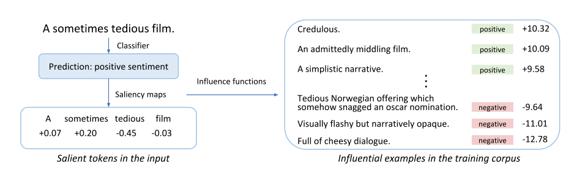
In the example shown in Figure 4.9, the statement “A sometimes tedious film” has been wrongly classified as having a “positive” sentiment. To understand why this happened, training instances are removed one at a time; those that result in the greatest change in the prediction are deemed to be influential points. These are shown on the right side of the diagram. The presence of multiple ambivalent statements that were labelled as “positive” makes it easier to understand why the mistake happened.
Another approach is to identify which parts of the test sentence itself were important to the eventual prediction. Imagine perturbing the test sentence in some ways, and studying how the prediction changed. In one study of a Question-Answering model (see Figure 4.10), the question was modified by dropping the least important word, until the question was answered incorrectly. This gives us an indication of which words were vital for the question to be answered correctly. In this case, the study revealed something pathological about the model. A one-word question seemed to still provide the correct answer from this passage!
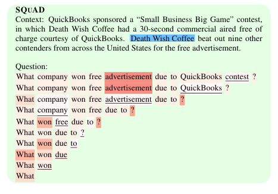
For transformers in particular, a great deal of study has focused on the weights that the attention layers pick up. By relating these to linguistic information, researchers try to infer the precise language-related information that models retain. For instance, it has been found that BERT learns parts of speech. It is also able to identify the dependencies between words. In Figure 4.11, we can conclude that the prepositions place great attention on their objects, e.g. of on Treasury and bonds, and in on trading, and so on.
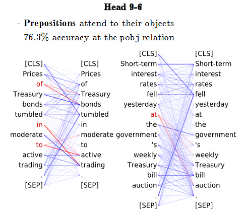
4.10 References
Video explainers
- Transformer models and BERT: A very good video from Google Cloud Tech on current neural models (11:37)
- Introduction to RNN
- Introduction to BERT
Website References
- Hugging Face course on transformers
- Gensim documentation: Contains tutorials as well.
- Using sklearn to perform LDA: We can also use scikit-learn to perform LDA.
- Visualising LDA: Contains sample notebooks for the visualisation.